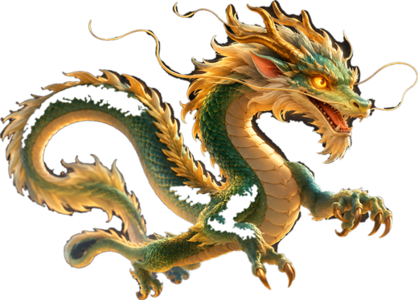

<!doctype html><html lang="ru"><head><meta charset="utf-8"><meta name="viewport" content="width=device-width,initial-scale=1,viewport-fit=cover">
<title>复习 — Большое повторение для Володи</title>
<link rel="stylesheet" href="https://fonts.googleapis.com/css2?family=Manrope:wght@500;600;700;800&family=Nunito:wght@700;800;900&display=swap">
<style>
@font-face{font-family:'LXGW WenKai GB';src:url(data:font/woff;base64,__FONT_GB__) format('woff');font-display:block}
:root{--bg:#E9EDF4;--ink:#1E2350;--t:#3D4560;--mu:#7D86A3;--ac:#5B6BD8;--ac2:#2B3270;--ok:#2DBE8C;--no:#FF5C8A;--sh1:#C5CBD8;--sh2:#fff;
 --t1:#2DBE8C;--t2:#F5A524;--t3:#7C6FFF;--t4:#FF5C8A;--t0:#9AA2BC;--han:'LXGW WenKai GB','Noto Sans SC','PingFang SC','Microsoft YaHei',sans-serif}
*{box-sizing:border-box;margin:0;padding:0;-webkit-tap-highlight-color:transparent}
html,body{background:var(--bg)}
body{font-family:Manrope,system-ui,-apple-system,sans-serif;color:var(--t);min-height:100vh;padding:max(14px,env(safe-area-inset-top)) 14px 40px}
button{font:inherit;border:0;cursor:pointer;color:inherit;background:none}
.zh{font-family:var(--han);font-weight:400}.py{font-family:Nunito,Manrope,sans-serif;font-weight:800}
.n{background:var(--bg);border-radius:24px;box-shadow:8px 8px 18px var(--sh1),-8px -8px 18px var(--sh2)}
.in{background:var(--bg);border-radius:18px;box-shadow:inset 5px 5px 10px var(--sh1),inset -5px -5px 10px var(--sh2)}
.app{max-width:860px;margin:0 auto}
.top{display:flex;align-items:center;gap:14px;padding:14px 18px;margin-bottom:16px}
.top .zh{font-size:34px;color:var(--ac2);line-height:1;white-space:nowrap}
.top h1{font-size:19px;font-weight:800;color:var(--ink);line-height:1.15}
.top small{display:block;font-size:13px;color:var(--mu);font-weight:600}
.prog{margin-left:auto;min-width:120px;font-size:13px;font-weight:800;color:var(--mu);text-align:right}
.prog .bar{height:8px;border-radius:5px;background:#D6DBE6;margin-top:6px;overflow:hidden}.prog .bar i{display:block;height:100%;background:linear-gradient(90deg,var(--ac),var(--ok));border-radius:5px;transition:width .4s}
@media(max-width:600px){.top small{display:none}.top .zh{font-size:28px}.top h1{font-size:16px}.prog{min-width:90px}}
.main{padding:24px 24px 22px}
@media(max-width:600px){.main{padding:18px 14px}}
.part{display:inline-flex;gap:8px;align-items:center;font-size:12.5px;font-weight:800;letter-spacing:.08em;text-transform:uppercase;color:var(--mu)}
.part b{color:#fff;background:var(--ac);padding:3px 9px;border-radius:9px;letter-spacing:.04em}
.part b.l1{background:var(--t2)}
h2{font-size:28px;font-weight:800;color:var(--ink);line-height:1.15;letter-spacing:-.01em;margin-top:10px}
@media(max-width:600px){h2{font-size:23px}}
.hz{display:flex;align-items:baseline;gap:12px;margin-top:6px;flex-wrap:wrap}.hz .zh{font-size:34px;color:var(--ac2)}.hz .py{font-size:18px;color:var(--ac)}
.lead{font-size:17px;line-height:1.55;margin-top:12px}
.lead b{color:var(--ink)}
.lead em,.zh-i{font-family:var(--han);font-style:normal;color:var(--ac2);font-size:1.15em}
.ipy{font-family:Nunito;font-weight:800;color:var(--ac)}
h3{font-size:18px;font-weight:800;color:var(--ink);margin:22px 0 10px}
.btn{display:inline-flex;align-items:center;justify-content:center;gap:8px;padding:14px 22px;border-radius:18px;font-weight:800;font-size:16.5px;background:var(--ac);color:#fff;box-shadow:6px 6px 14px var(--sh1),-6px -6px 14px var(--sh2);transition:transform .1s;text-decoration:none}
.btn:active{transform:scale(.97)}.btn.g{background:var(--bg);color:var(--ac2)}.btn.okb{background:var(--ok)}
.row{display:flex;flex-wrap:wrap;gap:12px;align-items:center;margin-top:16px}
.cards{display:grid;gap:14px;margin-top:16px}@media(min-width:700px){.cards.c2{grid-template-columns:1fr 1fr}.cards.c3{grid-template-columns:repeat(3,1fr)}.cards.c4{grid-template-columns:repeat(4,1fr)}}
.card{padding:16px 18px;border-radius:22px;font-size:15.5px;line-height:1.5}
.card b.h{display:block;font-size:18px;color:var(--ac2);margin-bottom:4px;line-height:1.25}
.card .ic{font-size:26px;display:block;margin-bottom:4px}
.tip{margin-top:16px;padding:12px 16px;border-radius:16px;background:#FFF6DC;color:#6B5310;font-size:15.5px;line-height:1.5}
.say{display:inline-flex;align-items:center;gap:8px}
.say:after{content:'🔊';font-size:.6em;opacity:.55}
.say.on{color:var(--ok)!important}
/* check */
.chk{margin-top:22px;padding:18px;border-radius:22px}
.chk .q{font-size:17px;font-weight:800;color:var(--ink);line-height:1.4}
.chk .q:before{content:'✏️ Проверь себя';display:block;font-size:12.5px;letter-spacing:.08em;text-transform:uppercase;color:var(--mu);margin-bottom:6px}
.mcq{display:grid;gap:10px;margin-top:12px}@media(min-width:700px){.mcq.two{grid-template-columns:1fr 1fr}}
.opt{padding:13px 16px;border-radius:18px;font-size:16px;font-weight:700;text-align:left;line-height:1.35;box-shadow:6px 6px 14px var(--sh1),-6px -6px 14px var(--sh2)}
.opt.ok{background:#DDF5EC;box-shadow:inset 3px 3px 8px #B9DCCD}.opt.no{background:#FFE3EB;box-shadow:inset 3px 3px 8px #F0C2D0}
.opt .zh{font-size:1.25em}
.fb{margin-top:12px;font-size:15.5px;font-weight:700;line-height:1.45;min-height:22px}.fb.ok{color:#14855E}.fb.no{color:#D9366A}
/* nav */
.nextbar{display:flex;gap:12px;justify-content:space-between;align-items:center;margin-top:26px;padding-top:18px;border-top:1px solid #D6DBE6;flex-wrap:wrap}
.nextbar .btn{flex:1 1 auto}.nextbar .btn.nx{flex:2 1 240px}
/* pieces */
.motto{text-align:center;padding:26px 10px 10px}
.motto .zh{font-size:46px;line-height:1.3;color:var(--ac2);letter-spacing:.04em}
.motto .py{font-size:19px;color:var(--ac);margin-top:8px}
.motto .ru{font-size:22px;font-weight:800;color:var(--ink);margin-top:12px}
@media(max-width:600px){.motto .zh{font-size:34px}}
.sys{padding:20px;border-radius:26px;color:#fff;text-align:center;display:grid;gap:4px;justify-items:center}
.sys .zh{font-size:58px;line-height:1.1;color:#fff}.sys .py{font-size:22px}.sys small{font-size:14.5px;font-weight:700;opacity:.92;line-height:1.4}
.phone{width:290px;max-width:100%;margin:18px auto 0;border-radius:40px;padding:12px;background:#1E2350;box-shadow:10px 10px 24px var(--sh1),-8px -8px 18px var(--sh2)}
.phone .sc{background:#F2F3F7;border-radius:30px;overflow:hidden;display:flex;flex-direction:column;min-height:440px}
.phone .hd{text-align:center;font-weight:800;font-size:14px;padding:14px 0 8px;color:#111}
.chat{flex:1;padding:8px 12px;display:flex;flex-direction:column;gap:8px}
.bub{max-width:80%;padding:9px 13px;border-radius:18px;font-size:19px;font-family:var(--han);line-height:1.3}
.bub.l{background:#fff;align-self:flex-start;border-bottom-left-radius:6px}.bub.r{background:#5B6BD8;color:#fff;align-self:flex-end;border-bottom-right-radius:6px;animation:pop .3s}
@keyframes pop{from{transform:scale(.6);opacity:0}}
.kbd{background:#D5D8E0;padding:8px 5px 12px}
.ipt{background:#fff;border-radius:10px;padding:8px 10px;font-size:18px;font-weight:800;font-family:Nunito;min-height:38px;color:#111}
.ipt i{color:var(--ac);font-style:normal;animation:bl 1s steps(1) infinite}@keyframes bl{50%{opacity:0}}
.cand{display:flex;gap:6px;padding:7px 2px;min-height:44px;overflow-x:auto}
.cand button{padding:4px 12px;border-radius:9px;font-family:var(--han);font-size:22px;background:#fff;white-space:nowrap}
.cand button.best{background:#5B6BD8;color:#fff;animation:pop .3s}
.kr{display:flex;justify-content:center;gap:4px;margin-top:6px}
.kr button{flex:1;max-width:25px;height:38px;border-radius:6px;background:#fff;font-size:15px;font-weight:700;color:#222;box-shadow:0 1px 0 #9A9EA8}
.kr button.hot{background:#FFE7A8;box-shadow:0 0 0 2px #F5A524}
.kr button:active{background:#C9CEDB}
.kr .wide{max-width:none;flex:3;font-size:13px}
.cube{padding:14px 12px;border-radius:22px;text-align:center;display:grid;gap:6px;justify-items:center}
.cube .bx{display:flex;gap:4px}
.cube .bx span{width:46px;height:46px;border-radius:12px;display:grid;place-items:center;font-family:var(--han);font-size:28px;color:#fff}
.cube small{font-size:12px;font-weight:800;letter-spacing:.06em;color:var(--mu);text-transform:uppercase}
.cube b{font-size:16px;color:var(--ink)}
.syl3{display:flex;justify-content:center;align-items:flex-end;gap:10px;margin-top:20px;flex-wrap:wrap}
.part3{padding:14px 18px 12px;border-radius:22px;text-align:center;min-width:110px}
.part3 .big{font-family:Nunito;font-weight:900;font-size:76px;line-height:1}
.part3 .lb{font-size:13px;font-weight:800;color:var(--mu);margin-top:4px;letter-spacing:.04em}
.part3 .lb2{font-size:14px;font-weight:700;color:var(--t);max-width:140px;margin-top:2px;min-height:20px;transition:opacity .3s}
.part3.hide .lb2{opacity:0}
.plus{font-family:Nunito;font-weight:900;font-size:40px;color:var(--mu);padding-bottom:40px}
@media(max-width:600px){.syl3{display:grid;grid-template-columns:1fr auto 1fr auto 1fr;gap:6px;align-items:center}.part3{min-width:0;padding:10px 4px}.part3 .big{font-size:46px}.part3 .lb{font-size:10.5px}.part3 .lb2{font-size:11.5px}.plus{font-size:22px;padding:0}.syl3 .eq{display:none}.syl3 .res{grid-column:1/-1;justify-self:center;min-width:160px;margin-top:6px}}
.tones{display:grid;grid-template-columns:repeat(5,1fr);gap:10px;margin-top:18px}
@media(max-width:600px){.tones{grid-template-columns:repeat(3,1fr)}}
.tone{padding:14px 6px 12px;border-radius:22px;display:grid;justify-items:center;gap:6px}
.tone svg{width:70px;height:46px}
.tone .py{font-size:34px;line-height:1}
.tone .zh{font-size:34px;color:var(--ac2)}
.tone small{font-size:13px;font-weight:700;color:var(--mu)}
.tone.on{box-shadow:inset 5px 5px 10px var(--sh1),inset -5px -5px 10px var(--sh2)}
.vid{border-radius:22px;overflow:hidden;background:#000;aspect-ratio:9/16;max-height:520px;margin:0 auto;display:block;width:auto;max-width:100%}
.vids{display:grid;gap:18px;margin-top:16px}@media(min-width:700px){.vids{grid-template-columns:1fr 1fr}}
.vids figure{padding:12px;border-radius:24px}.vids figcaption{font-size:15px;font-weight:700;margin-top:10px;line-height:1.4;text-align:center}
.vids video{width:100%;border-radius:16px;display:block;background:#000;max-height:460px}
.flip{padding:16px 18px;border-radius:20px;text-align:left;font-size:16px;font-weight:700;line-height:1.4;width:100%}
.flip .a{display:block;margin-top:8px;color:#14855E;font-size:18px;font-weight:800;visibility:hidden}
.flip.open .a{visibility:visible}
.vow{display:grid;grid-template-columns:repeat(5,1fr);gap:10px;margin-top:16px}
.vow .col{padding:12px 4px;border-radius:22px;display:grid;gap:4px;justify-items:center}
.vow .col .ru{font-size:14px;font-weight:800;color:var(--mu)}
.vow button{font-family:Nunito;font-weight:900;font-size:34px;line-height:1.2;padding:2px 8px;border-radius:12px}
.vow button.on{color:var(--ok)}
@media(max-width:600px){.vow{gap:6px}.vow button{font-size:27px;padding:2px 4px}}
.ep{display:grid;gap:12px;margin-top:16px}@media(min-width:700px){.ep{grid-template-columns:repeat(4,1fr)}}
.ep .card .w1{font-size:21px;font-weight:800;color:var(--ink)}.ep .card .w2{font-size:19px;font-weight:800;color:#17936A;margin-top:2px}
.ep .card small{display:block;color:var(--mu);font-size:13.5px;margin-top:6px;line-height:1.4}
.pic{display:block;max-width:100%;border-radius:18px;margin:16px auto 0}
.toc{display:grid;gap:10px;margin-top:18px}
.toc div{display:flex;gap:12px;align-items:center;padding:12px 16px;border-radius:18px;font-weight:700;font-size:16px}
.toc span{width:36px;height:36px;border-radius:12px;display:grid;place-items:center;font-size:20px;flex:none}
.chips{display:flex;flex-wrap:wrap;gap:10px;margin-top:12px}
.chip{padding:9px 16px;border-radius:15px;font-family:Nunito;font-weight:900;font-size:22px;line-height:1.1}
.chip.on{box-shadow:inset 3px 3px 7px var(--sh1),inset -3px -3px 7px var(--sh2)}
.toast{position:fixed;left:50%;bottom:24px;transform:translateX(-50%);background:var(--ac2);color:#fff;padding:12px 18px;border-radius:16px;font-weight:700;font-size:15px;z-index:9;opacity:0;transition:opacity .3s;pointer-events:none;max-width:90vw;text-align:center}
.toast.on{opacity:1}
/* lesson 4 catch-up */
.who{display:grid;grid-template-columns:1fr 1fr;gap:14px;margin-top:18px}
.who button{padding:20px 10px;border-radius:22px;font-weight:800;font-size:21px;color:var(--ink);display:grid;gap:4px;justify-items:center}
.who button small{font-size:13px;color:var(--mu);font-weight:700}
.who button.on{box-shadow:inset 5px 5px 10px var(--sh1),inset -5px -5px 10px var(--sh2);color:var(--ac)}
.ini{display:grid;grid-template-columns:repeat(4,1fr);gap:10px;margin-top:16px}
@media(min-width:700px){.ini{grid-template-columns:repeat(6,1fr)}}
.ini button{padding:12px 4px 10px;border-radius:20px;display:grid;justify-items:center;gap:2px}
.ini b{font-family:Nunito;font-weight:900;font-size:36px;line-height:1;color:var(--ac2)}
.ini small{font-size:12.5px;font-weight:800;color:var(--mu)}
.ini button.asp b{color:var(--t4)}
.ini button.on{box-shadow:inset 5px 5px 10px var(--sh1),inset -5px -5px 10px var(--sh2)}
.ini button.on b{color:var(--ok)}
.tc{display:grid;gap:12px;margin-top:16px}@media(min-width:700px){.tc{grid-template-columns:1fr 1fr}}
.tc .card{display:flex;gap:12px;align-items:flex-start}
.tc .card .chips{margin-top:6px}
.chip.on{color:var(--ok)!important}
.cmp{display:grid;grid-template-columns:1fr 1fr;gap:14px;margin-top:16px}
@media(max-width:600px){.cmp{grid-template-columns:1fr}}
.cmp .card{text-align:center;display:grid;justify-items:center;gap:6px}
.cmp .k{font-size:12.5px;font-weight:800;letter-spacing:.08em;text-transform:uppercase;color:var(--mu)}
.cmp .tn{font-family:Nunito;font-weight:900;font-size:40px;line-height:1}
.wl{display:grid;grid-template-columns:repeat(2,1fr);gap:12px;margin-top:14px}
@media(min-width:700px){.wl{grid-template-columns:repeat(3,1fr)}}
.wl button{padding:14px 8px 12px;border-radius:20px;display:grid;justify-items:center;gap:4px;text-align:center}
.wl .zh{font-size:40px;line-height:1.1;color:var(--ac2)}
.wl .py{font-size:20px}
.wl small{font-size:13px;font-weight:700;color:var(--mu);line-height:1.3}
.wl .snd{font-size:13.5px;font-weight:800;color:var(--mu)}
.wl button.on .zh{color:var(--ok)}
.pp{display:flex;flex-wrap:wrap;gap:10px;margin-top:12px}
.pp button{padding:10px 14px;border-radius:16px;font-family:Nunito;font-weight:900;font-size:21px;display:grid;justify-items:center}
.pp button small{font:800 13px Manrope;color:var(--mu);visibility:hidden}
.pp button.open small{visibility:visible}
.qbox{margin-top:18px;padding:18px;border-radius:22px;text-align:center}
.qbox .qh{display:flex;justify-content:space-between;font-size:13px;font-weight:800;color:var(--mu);letter-spacing:.04em}
.qbox .qq{font-size:17px;font-weight:800;color:var(--ink);margin-top:10px;line-height:1.4}
.qbox .opts{display:grid;gap:10px;margin-top:14px}
.qbox .opts.c2{grid-template-columns:1fr 1fr}.qbox .opts.c3{grid-template-columns:repeat(3,1fr)}.qbox .opts.c4{grid-template-columns:repeat(4,1fr)}
@media(max-width:600px){.qbox .opts.c4{grid-template-columns:1fr 1fr}.qbox .opts.c3{grid-template-columns:1fr}}
.qbox .opt{text-align:center;font-size:18px}
.qbox .opt .py{font-size:22px}
.play{width:84px;height:84px;border-radius:50%;font-size:32px;color:var(--ac);margin:12px auto 0;display:grid;place-items:center}
.play.on{color:var(--ok);box-shadow:inset 5px 5px 10px var(--sh1),inset -5px -5px 10px var(--sh2)}
.dots{display:flex;justify-content:center;gap:6px;margin-top:10px}.dots i{width:10px;height:10px;border-radius:50%;background:#D6DBE6}
.dots i.ok{background:var(--ok)}.dots i.no{background:var(--t2)}.dots i.cur{background:var(--ac)}
.res{font-family:Nunito;font-weight:900;font-size:44px;color:var(--ac2)}
.rec{margin-top:18px;padding:18px;border-radius:22px}
.rec .row{justify-content:center}
@media(max-width:600px){.rec .row{flex-wrap:nowrap;gap:8px}.rec .row .btn{padding:12px 10px;font-size:15px;flex:1}}
.pp button span{white-space:nowrap}
.dlg .ln{text-align:left}
.btn.red{background:var(--no)}
.btn:disabled{opacity:.45}
.mel{display:block;width:100%;max-width:520px;margin:14px auto 0;border-radius:16px;background:#F3F5FA}
.leg{display:flex;justify-content:center;gap:18px;font-size:13.5px;font-weight:800;color:var(--mu);margin-top:8px;flex-wrap:wrap}
.leg i{display:inline-block;width:22px;height:5px;border-radius:3px;vertical-align:middle;margin-right:6px}
.dlg{display:grid;gap:10px;margin-top:16px}
.dlg .ln{display:flex;gap:12px;align-items:center;padding:12px 16px;border-radius:20px}
.dlg .ln .zh{font-size:30px;color:var(--ac2)}
.dlg .ln .py{font-size:17px;color:var(--ac)}
.dlg .ln small{display:block;font-size:14px;font-weight:700;color:var(--mu)}
.dlg .ln.r{flex-direction:row-reverse;text-align:right}
.sumr{display:grid;gap:10px;margin-top:16px}
.sumr div{display:flex;justify-content:space-between;gap:12px;padding:12px 16px;border-radius:18px;font-weight:700;font-size:15.5px}
.sumr b{text-align:right;flex:none;max-width:55%}.sumr span{min-width:0}.sumr .g{color:#14855E}.sumr .y{color:#A8740B}
/* povtor: images, radicals, writing, 小明 */
.ph{display:block;width:100%;max-height:300px;object-fit:cover;border-radius:20px;margin-top:16px}
.pict{display:grid;grid-template-columns:repeat(3,1fr);gap:12px;margin-top:16px}
@media(min-width:700px){.pict{grid-template-columns:repeat(6,1fr)}}
.pict button{padding:12px 6px;border-radius:20px;display:grid;justify-items:center;gap:4px}
.pict img{width:72px;height:72px;object-fit:contain}
.pict .zh{font-size:44px;line-height:1;color:var(--ac2);visibility:hidden}
.pict .py,.pict small{visibility:hidden}.pict small{font-size:13px;font-weight:700;color:var(--mu)}
.pict button.open .zh,.pict button.open .py,.pict button.open small{visibility:visible}
.evo{display:grid;grid-template-columns:repeat(2,1fr);gap:12px;margin-top:16px}
@media(min-width:700px){.evo{grid-template-columns:repeat(5,1fr)}}
.evo .card{display:grid;justify-items:center;gap:4px;text-align:center}
.evo img{width:90px;height:90px;object-fit:contain}.evo .zh{font-size:72px;line-height:90px;color:var(--ac2)}
.evo b{font-size:15px;color:var(--ink)}.evo small{font-size:12.5px;color:var(--mu);font-weight:700}
.evo .me{box-shadow:0 0 0 3px var(--ac),8px 8px 18px var(--sh1),-8px -8px 18px var(--sh2)}
.rad{display:grid;grid-template-columns:repeat(2,minmax(0,1fr));gap:12px;margin-top:16px}
@media(min-width:700px){.rad{grid-template-columns:repeat(4,1fr)}}
.rad .card{text-align:center;display:grid;justify-items:center;gap:4px}
.rad .e{font-size:36px}.rad .k{font-family:var(--han);font-size:64px;line-height:1.05;color:var(--t4)}
.rad .ex{display:flex;gap:6px;margin-top:4px;flex-wrap:wrap;justify-content:center}.rad .ex button{font-family:var(--han);font-size:28px;padding:2px 10px;border-radius:12px;color:var(--ac2)}
.lr{display:grid;grid-template-columns:1fr 1fr;gap:12px;margin-top:16px}
.lr .card{text-align:center}.lr .big{font-family:var(--han);font-size:84px;line-height:1.1;color:var(--ac2)}
.lr .big i{font-style:normal;color:var(--t4)}
.det{display:grid;grid-template-columns:1fr 1fr;gap:12px;margin-top:16px}
@media(min-width:700px){.det{grid-template-columns:repeat(4,1fr)}}
.det button{padding:14px 8px;border-radius:22px;display:grid;justify-items:center;gap:6px;text-align:center}
.det .zh{font-size:64px;line-height:1;color:var(--ac2)}.det .q1,.det .a1{font-size:14.5px;font-weight:700;line-height:1.35}
.det .a1{color:#14855E;font-weight:800;visibility:hidden}.det button.open .a1{visibility:visible}
.det .q1{visibility:hidden}.det button.half .q1,.det button.open .q1{visibility:visible}
.qbox .opt.em{font-size:40px}.qbox .opt.hz{font-family:var(--han);font-size:44px;font-weight:400;color:var(--ac2)}
.qbox .qimg{width:110px;height:110px;object-fit:contain;margin:10px auto 0;display:block}
.qbox .qbig{font-size:84px;line-height:1.1;margin-top:8px}.qbox .qbig.zh{color:var(--t4)}
.rul{display:grid;grid-template-columns:1fr;gap:12px;margin-top:16px}
@media(min-width:700px){.rul{grid-template-columns:1fr 1fr}}
.rul .card{display:flex;gap:14px;align-items:center;cursor:pointer}
.cell{position:relative;flex:none;width:96px;height:96px;border-radius:14px;background:#fff;box-shadow:inset 0 0 0 2px #FF8FA8}
.cell svg.grid,.wbox svg.grid{position:absolute;inset:0;width:100%;height:100%;pointer-events:none}
.cell .hw{position:absolute;inset:0}
.rul .k2{font-size:12px;font-weight:800;letter-spacing:.08em;text-transform:uppercase;color:var(--mu)}
.rul b{display:block;font-size:17px;color:var(--ink);line-height:1.3;margin-top:2px}
.wbox{position:relative;width:min(300px,78vw);height:min(300px,78vw);margin:14px auto 0;border-radius:18px;background:#fff;box-shadow:inset 0 0 0 3px #FF8FA8;touch-action:none}
.wbox .hw{position:absolute;inset:0}
.wch{display:flex;gap:8px;justify-content:center;flex-wrap:wrap;margin-top:12px}
.wch span{width:48px;height:48px;border-radius:14px;display:grid;place-items:center;font-family:var(--han);font-size:30px;color:var(--ac2)}
.wch span.cur{box-shadow:0 0 0 3px var(--ac)}.wch span.ok{background:#DDF5EC;color:#14855E}
.hint2{font-size:14.5px;font-weight:700;color:var(--mu)}
.chz{display:grid;grid-template-columns:auto 1fr;gap:18px;align-items:center;margin-top:12px}
.chz .say:after{font-size:22px}.chz .zh{font-size:110px;line-height:1;color:var(--ac2)}
.chz .py{font-size:26px;color:var(--t3)}.chz small{display:block;font-size:15px;font-weight:700;color:var(--mu);line-height:1.4}
@media(max-width:600px){.chz .zh{font-size:84px}}
.bigname{font-family:var(--han);font-size:60px;color:var(--ac2);line-height:1.15;text-align:center;margin-top:6px}
.bigname+.py{text-align:center;font-size:24px}
.xm{display:grid;gap:12px;margin-top:14px}
.xm .ln{display:flex;gap:10px;align-items:flex-end}
.xm .ln.me{flex-direction:row-reverse}
.xm .av{flex:none;width:52px;height:52px;border-radius:50%;object-fit:cover;box-shadow:0 0 0 3px #fff,0 4px 10px rgba(43,50,112,.2)}
.xm .av.me{display:grid;place-items:center;background:var(--t2);color:#fff;font:900 22px Nunito}
.xm .bb{padding:12px 16px;border-radius:20px 20px 20px 6px;background:#fff;max-width:78%;text-align:left;box-shadow:0 4px 10px rgba(43,50,112,.08)}
.xm .me .bb{border-radius:20px 20px 6px 20px;background:#E3E8FF}
.xm .bb .zh{font-size:28px;color:var(--ink);line-height:1.25}.xm .bb .py{display:block;color:var(--ac);font-size:16px}.xm .bb small{display:block;color:var(--mu);font-weight:700;font-size:13.5px}
.xm .bb .nw{display:inline-block;font-size:11.5px;font-weight:800;color:#fff;background:var(--t4);border-radius:8px;padding:2px 7px;margin-bottom:4px}
.mic{width:104px;height:104px;border-radius:50%;display:grid;place-items:center;margin:16px auto 4px;font-size:42px;background:var(--bg);box-shadow:8px 8px 18px var(--sh1),-8px -8px 18px var(--sh2);transform:scale(var(--lvl,1));transition:transform .08s}
.mic.rec{background:#FFE3EB;box-shadow:0 0 0 6px rgba(255,92,138,.35)}.mic.busy{opacity:.5}
.chn{display:grid;gap:10px;margin-top:16px}
.chn .card{display:flex;align-items:center;gap:12px;flex-wrap:wrap}
.chn .card>b{width:30px;height:30px;border-radius:10px;background:var(--ac);color:#fff;display:grid;place-items:center;font-size:15px}
.ztab{display:grid;grid-template-columns:repeat(3,1fr);gap:10px;margin-top:16px}
.ztab button{padding:14px 4px 10px;border-radius:20px;display:grid;justify-items:center;gap:2px}
.ztab b{font-family:Nunito;font-weight:900;font-size:40px;line-height:1;color:var(--ac2)}
.ztab .ru{font-size:15px;font-weight:800;color:var(--t4)}.ztab small{font-size:12.5px;font-weight:700;color:var(--mu)}
.ztab button.asp b{color:var(--t4)}.ztab button.on{box-shadow:inset 5px 5px 10px var(--sh1),inset -5px -5px 10px var(--sh2)}
.blk{display:inline-flex;align-items:center;gap:8px;font-size:12.5px;font-weight:800;letter-spacing:.08em;text-transform:uppercase;color:var(--mu)}
.blk b{color:#fff;padding:3px 9px;border-radius:9px;letter-spacing:.04em}
.hud{display:flex;justify-content:space-between;align-items:center;gap:10px;margin-top:10px;font:900 18px Nunito;color:var(--ac2)}
.hud .cmb{color:var(--t4)}
.fd{position:relative;height:300px;margin-top:8px;border-radius:26px;overflow:hidden;background:linear-gradient(180deg,rgba(10,6,40,.15),rgba(10,6,40,.35)),url(../urok-6/zadaniya/img/fon.jpg) 30% 50%/cover,#1A1050;box-shadow:inset 0 0 40px rgba(0,0,0,.45)}
.fd::before{content:'';position:absolute;inset:0;background-image:radial-gradient(1.5px 1.5px at 12% 22%,#fff 50%,transparent 51%),radial-gradient(1px 1px at 30% 12%,#fff 50%,transparent 51%),radial-gradient(1.5px 1.5px at 48% 30%,#fff 50%,transparent 51%),radial-gradient(1px 1px at 66% 8%,#fff 50%,transparent 51%),radial-gradient(1.5px 1.5px at 22% 44%,#fff 50%,transparent 51%),radial-gradient(1px 1px at 58% 52%,#fff 50%,transparent 51%);opacity:.8;animation:tw 3s ease-in-out infinite alternate}
@keyframes tw{to{opacity:.4}}
.fd .mt{position:absolute;left:0;right:0;bottom:0;height:120px}
.fd .lan{position:absolute;font-size:22px;filter:drop-shadow(0 0 8px #FF7A3D);animation:lf 5s ease-in-out infinite alternate}
@keyframes lf{to{transform:translateY(-14px) rotate(6deg)}}
.fd .dr{position:absolute;left:-4%;bottom:34px;width:230px;height:160px;display:grid;place-items:center;font-size:118px;line-height:1;animation:dfl 2.4s ease-in-out infinite alternate;transform-origin:50% 60%}
.fd .dr img{width:100%;height:100%;object-fit:contain}
@keyframes dfl{to{transform:translateY(-12px)}}
.fd .orb{position:absolute;right:14%;top:-80px;width:84px;height:84px;border-radius:50%;display:grid;place-items:center;font:900 30px Nunito;color:#fff;background:radial-gradient(circle at 35% 30%,#FFFFFF 0,#9AE8FF 18%,#3B6BFF 55%,#1A1E7A 100%);box-shadow:0 0 30px #5BB8FF,0 0 70px rgba(91,184,255,.6);animation:fall var(--t,7s) linear forwards}
@keyframes fall{to{top:200px}}
.fd .fire{position:absolute;left:18%;bottom:120px;width:46px;height:46px;border-radius:50%;background:radial-gradient(circle,#FFF7C2 0,#FFB23D 40%,#FF4D1A 75%,rgba(255,77,26,0) 100%);box-shadow:0 0 30px #FF7A1A;opacity:0}
.fd.hit .fire{animation:shoot .45s ease-in forwards}
@keyframes shoot{0%{opacity:1;transform:translate(0,0) scale(.6)}100%{opacity:1;transform:translate(var(--fx,220px),var(--fy,-60px)) scale(1.6)}}
.fd.hit .orb{animation-play-state:paused;animation:boom .55s .4s forwards}
@keyframes boom{50%{transform:scale(1.8);filter:brightness(2.5);opacity:1}100%{transform:scale(2.4);opacity:0}}
.fd.hit .dr{animation:roar .5s}
@keyframes roar{40%{transform:scale(1.18) rotate(-6deg)}}
.fd.miss .orb{animation-play-state:paused}
.fd.miss{animation:quake .45s}
@keyframes quake{25%{transform:translateX(-8px)}50%{transform:translateX(8px)}75%{transform:translateX(-4px)}}
.fd .tag{position:absolute;left:50%;top:14px;transform:translateX(-50%);padding:6px 16px;border-radius:14px;background:rgba(255,255,255,.14);backdrop-filter:blur(4px);color:#FFE59A;font:900 22px Nunito;letter-spacing:.04em;white-space:nowrap}
.fd .wall{position:absolute;right:0;bottom:0;width:38%;height:62px;background:linear-gradient(180deg,#7A2E3A,#4A1A28);clip-path:polygon(0 30%,10% 30%,10% 0,20% 0,20% 30%,40% 30%,40% 0,50% 0,50% 30%,70% 30%,70% 0,80% 0,80% 30%,100% 30%,100% 100%,0 100%)}
.zk{display:grid;grid-template-columns:repeat(3,1fr);gap:12px;margin-top:14px}
.zk .opt{font-size:34px;padding:18px 6px;background:linear-gradient(160deg,#1E5F4C,#0E3B30);color:#E9FFF6;box-shadow:0 6px 14px rgba(14,59,48,.35),inset 0 0 0 2px rgba(120,255,200,.35);text-shadow:0 0 10px rgba(120,255,200,.8)}
.zk .opt.ok{background:linear-gradient(160deg,#2DBE8C,#16865F)}.zk .opt.no{background:linear-gradient(160deg,#FF5C8A,#C2335C)}
.gst{background:linear-gradient(180deg,rgba(18,11,58,.25) 0,rgba(18,11,58,.92) 62%),url(../urok-6/zadaniya/img/dragon-hero.jpg) 50% 0/100% auto no-repeat,#120B3A;color:#fff;border-radius:26px;padding:210px 22px 22px;text-align:center}
.gst h3{margin:0 0 6px;font-size:28px;color:#FFE59A}.gst p{margin:4px 0;color:#DCD6FF;font-size:17px;line-height:1.45}

/* povtor-vova: seals, hero, gate, pinyin, dragon */
.top{flex-wrap:wrap}
.seals{display:flex;gap:6px;flex-wrap:wrap;justify-content:center}
.top .seals{width:100%;justify-content:flex-start;margin-top:2px}
.seal{width:32px;height:32px;border-radius:9px;display:grid;place-items:center;font-family:var(--han);font-size:20px;line-height:1;color:#B9BFD0;border:2px dashed #C5CBD8;transition:all .4s}
.seal.on{color:#fff;background:#D9363E;border:2px solid #A31F27;box-shadow:0 3px 8px rgba(217,54,62,.35);transform:rotate(-6deg)}
.seals.big{gap:10px;margin-top:16px}.seals.big .seal{width:58px;height:58px;font-size:34px;border-radius:14px}
@media(max-width:600px){.seals.big{gap:6px}.seals.big .seal{width:40px;height:40px;font-size:24px;border-radius:11px}}
.hero{border-radius:26px;overflow:hidden;color:#fff;padding:190px 22px 22px;margin-top:4px;background:linear-gradient(180deg,rgba(18,11,58,.1) 0,rgba(18,11,58,.92) 58%),url(../urok-6/zadaniya/img/dragon-hero.jpg) 50% 0/100% auto no-repeat,#120B3A}
.hero h2{color:#FFE59A;margin-top:0}.hero .lead{color:#E4E0FF}.hero .lead b{color:#fff}
@media(max-width:600px){.hero{padding-top:130px}}
.lvls{display:grid;gap:10px;margin-top:16px}@media(min-width:700px){.lvls{grid-template-columns:1fr 1fr}}
.lvls div{display:flex;gap:12px;align-items:center;padding:12px 14px;border-radius:18px;font-weight:700;font-size:15.5px;line-height:1.3}
.lvls .seal{flex:none;width:40px;height:40px;font-size:24px}
.btn.lock{background:#B9BFD0;color:#fff}
.pyl{display:grid;gap:14px;margin-top:16px}
.pyl .card{display:grid;gap:8px}
.pyl .hd{display:flex;align-items:center;gap:10px;flex-wrap:wrap}
.pyl .hd .zh{font-size:30px;color:var(--ac2)}.pyl .hd small{font-size:14px;font-weight:700;color:var(--mu)}
.pyl input{width:100%;font:800 22px Nunito,Manrope,sans-serif;color:var(--ink);padding:12px 14px;border:0;outline:0}
.pyl input:focus{box-shadow:inset 5px 5px 10px var(--sh1),inset -5px -5px 10px var(--sh2),0 0 0 3px rgba(91,107,216,.35)}
.pyl .pv{font-size:15px;font-weight:700;min-height:20px;line-height:1.4;color:var(--mu)}
.pyl .pv.ok{color:#14855E}.pyl .pv.no{color:#D9366A}
.pyl .card.done{box-shadow:inset 0 0 0 3px var(--ok),8px 8px 18px var(--sh1),-8px -8px 18px var(--sh2)}
.tkeys{display:grid;grid-template-columns:repeat(10,1fr);gap:6px;margin-top:14px}
.tkeys button{padding:9px 0;border-radius:12px;font:900 20px Nunito}
@media(max-width:600px){.tkeys{grid-template-columns:repeat(5,1fr)}}
.nomic{margin-top:10px;font-size:14px;font-weight:700;color:var(--mu);text-decoration:underline;display:none}
.zk.c4{grid-template-columns:repeat(4,1fr)}
.zk .opt svg{width:100%;max-width:70px;height:auto;display:block;margin:0 auto}
.zk .opt small{display:block;font:900 15px Nunito;opacity:.85}
.zk.tn .opt{padding:10px 4px;background:linear-gradient(160deg,#2A2470,#140F45);box-shadow:0 6px 14px rgba(20,15,69,.35),inset 0 0 0 2px rgba(160,150,255,.35)}
.zk.tn .opt.ok{background:linear-gradient(160deg,#2DBE8C,#16865F)}.zk.tn .opt.no{background:linear-gradient(160deg,#FF5C8A,#C2335C)}
.gst{margin-top:14px}
.qbox .opt .crv{display:block;margin:4px auto 0;max-width:64px}
.memo{margin-top:12px}
.qcard{padding:12px;border-radius:18px;margin-top:12px}
.qhead{display:flex;justify-content:space-between;font-size:13px;font-weight:800;color:var(--mu)}

</style></head><body>
<div class="app" id="app"></div><div class="toast" id="toast"></div>
<script src="../urok-5/audio-map.js"></script>
<script>__HW__</script>
<script>window.HZDATA=__HZDATA__;</script>
<script>
/* ===================== audio: the teacher's voice first, then the course voice ===================== */
const AUDIO=(/^https?:$/.test(location.protocol)&&!/claude/i.test(location.hostname))&&!/workers\.dev$/.test(location.hostname)?new URL('../audio/',location.href).href:'https://chtutorworld-ops.github.io/gruppa-deti-sait/audio/';
const VOICE=AUDIO+'voice/';let VOK=null;const VOKP=fetch(VOICE+'index.json?'+Date.now()).then(r=>r.json()).then(j=>VOK=j).catch(()=>{});
const fn=t=>AUDIO+[...t].map(c=>c.codePointAt(0).toString(16)).join('-')+'.mp3';
const $=s=>document.querySelector(s);
const shuffle=a=>{a=a.slice();for(let i=a.length-1;i>0;i--){const j=Math.random()*(i+1)|0;[a[i],a[j]]=[a[j],a[i]];}return a;};
function toast(m){const t=$('#toast');t.textContent=m;t.classList.add('on');clearTimeout(t._t);t._t=setTimeout(()=>t.classList.remove('on'),2600);}
const V={a:'āáǎà',o:'ōóǒò',e:'ēéěè',i:'īíǐì',u:'ūúǔù'};
const mark=(b,t)=>{if(!t)return b;let k=b.search(/a|e/);if(k<0)k=b.indexOf('ou');if(k<0){for(let j=b.length-1;j>=0;j--)if('aeiou'.includes(b[j])){k=j;break;}}return b.slice(0,k)+V[b[k]][t-1]+b.slice(k+1);};
const vkey=s=>{const t=SYL.tone(s);let b=SYL.plain(s);if(b==='i')b='yi';return b+t;};
let curA=null,curSrc=[],playTok=0;const BUF={};
const acx=()=>window.AC||(window.AC=new (window.AudioContext||window.webkitAudioContext)());
addEventListener('pointerdown',()=>{try{acx().resume()}catch(e){}},{passive:true});
function trimB(b){const d=b.getChannelData(0),sr=b.sampleRate;let pk=0;for(let i=0;i<d.length;i++){const v=Math.abs(d[i]);if(v>pk)pk=v;}const th=pk*0.04;
 let a=0,e=d.length-1;while(a<d.length&&Math.abs(d[a])<th)a++;while(e>a&&Math.abs(d[e])<th)e--;a=Math.max(0,a-Math.round(sr*.015));e=Math.min(d.length,e+Math.round(sr*.06));
 if(e-a<sr*.05)return b;const o=acx().createBuffer(1,e-a,sr);o.copyToChannel(d.slice(a,e),0);return o;}
function loadB(u){return BUF[u]||(BUF[u]=fetch(u).then(r=>{if(!r.ok)throw 0;return r.arrayBuffer();}).then(ab=>new Promise((ok,bad)=>{const p=acx().decodeAudioData(ab,ok,bad);p&&p.catch&&p.catch(bad);})).then(trimB).catch(e=>{delete BUF[u];throw e;}));}
const preload=us=>us.filter(Boolean).forEach(u=>loadB(u).catch(()=>{}));
function stopAll(){playTok++;try{curA&&curA.pause()}catch(e){}curSrc.forEach(x=>{try{x.stop()}catch(e){}});curSrc=[];}
function playOld(u,el){return new Promise(res=>{const a=new Audio(u);curA=a;el&&el.classList.add('on');const end=()=>{el&&el.classList.remove('on');res();};a.onended=end;a.onerror=end;a.play().catch(end);});}
// several files back to back with a short gap, no network pause between them
async function playList(urls,el,gap){urls=urls.filter(Boolean);if(!urls.length)return;stopAll();const tok=playTok;el&&el.classList.add('on');
 let bufs=null;const ctx=acx();try{ctx.resume();bufs=await Promise.all(urls.map(loadB));}catch(e){bufs=null;}
 if(tok!==playTok){return;}
 if(!bufs){for(const u of urls){if(tok!==playTok)return;await playOld(u);}el&&el.classList.remove('on');return;}
 let t=ctx.currentTime+0.02;const g=gap==null?0.25:gap;curSrc=bufs.map(b=>{const x=ctx.createBufferSource();x.buffer=b;x.connect(ctx.destination);x.start(t);t+=b.duration+g;return x;});
 await new Promise(r=>setTimeout(r,Math.max(0,(t-g-ctx.currentTime)*1000)));if(tok===playTok)el&&el.classList.remove('on');}
const urlS=s=>{const k=vkey(s);if(VOK&&VOK[k])return VOICE+k+'.wav';const c=SYL.char(s);return c?fn(c):null;};
const urlK=k=>VOK&&VOK[k]?VOICE+k+'.wav':null;              // b0, p0 …: the teacher's pure initial sound
const playS=(s,el)=>playList([urlS(s)],el);
// a training pair of syllables in the teacher's voice, said with the tone change:
// 3 + 3 → the first syllable is taken with the 2nd tone; 3 + 4 → the first 3rd tone is cut after its low part (no rise)
async function playPair(py,el){const [a,b]=py.split(' '),ta=SYL.tone(a),tb=SYL.tone(b);stopAll();const tok=playTok;
 const first=ta===3&&tb===3?mark(SYL.plain(a),2):a;const half=ta===3&&tb!==3;
 const ctx=acx();let A,B;try{ctx.resume();[A,B]=await Promise.all([urlS(first),urlS(b)].map(loadB));}catch(e){return playList([urlS(first),urlS(b)],el,.05);}
 if(tok!==playTok)return;
 if(half){const d=A.getChannelData(0),n=Math.floor(d.length*.6),o=ctx.createBuffer(1,n,A.sampleRate),c=d.slice(0,n),f=Math.floor(A.sampleRate*.04);
  for(let i=0;i<f;i++)c[n-1-i]*=i/f;o.copyToChannel(c,0);A=o;}
 el&&el.classList.add('on');let t=ctx.currentTime+.02;[A,B].forEach(x=>{const src=ctx.createBufferSource();src.buffer=x;src.connect(ctx.destination);src.start(t);curSrc.push(src);t+=x.duration+.04;});
 await new Promise(r=>setTimeout(r,Math.max(0,(t-ctx.currentTime)*1000)));if(tok===playTok)el&&el.classList.remove('on');}
// the same pair with a partner initial: b/p, d/t, g/k, m/n, n/l, f/h
const SWAP={b:'p',p:'b',d:'t',t:'d',g:'k',k:'g',m:'n',n:'l',l:'n',f:'h',h:'f'};
const swapIni=w=>{const c=w[0];return SWAP[c]?SWAP[c]+w.slice(1):w;};
const pairQuiz=list=>noTriple(list,x=>x[0]).map(py=>{const [a,b]=py.split(' ');const o=[py,swapIni(a)+' '+b,a+' '+swapIni(b)];
 return {play:el=>playPair(py,el),q:'Какую пару ты услышал?',opts:o.map(x=>`<span class="py">${tpy(x)}</span>`),right:`<span class="py">${tpy(py)}</span>`,ok:tpy(py)};});
// a word in the teacher's voice if she recorded it on zapis/ (id da3gu3), otherwise the course mp3
const wid=py=>py.split(' ').map(x=>SYL.plain(x)+SYL.tone(x)).join('');
const urlW=hz=>{const w=[...W33,...W34,['你好','nǐ hǎo'],['我叫','wǒ jiào']].find(x=>x[0]===hz);const k=w&&wid(w[1]);return k&&VOK&&VOK[k]?VOICE+k+'.wav':fn(hz);};
const playW=(hz,el)=>playList(hz.split(' ').map(urlW),el);      // '你好 我叫 达莉娅' = a phrase from pieces

/* ===================== pitch (YIN), as in ДЗ 3 ===================== */
async function toPCM(ab){const buf=await new Promise((ok,bad)=>{const p=acx().decodeAudioData(ab,ok,bad);p&&p.catch&&p.catch(bad);});
 const sr=16000,len=Math.ceil(buf.duration*sr);const oc=new (window.OfflineAudioContext||window.webkitOfflineAudioContext)(1,len,sr);
 const src=oc.createBufferSource();src.buffer=buf;src.connect(oc.destination);src.start();const r=await oc.startRendering();return r.getChannelData(0);}
function yin(x,sr){const W=512,tmin=Math.floor(sr/550),tmax=Math.floor(sr/65),d=new Float32Array(tmax+1);
 for(let t=1;t<=tmax;t++){let s=0;for(let i=0;i<W;i++){const v=x[i]-x[i+t];s+=v*v;}d[t]=s;}
 let run=0;for(let t=1;t<=tmax;t++){run+=d[t];d[t]=run?d[t]*t/run:1;}
 for(let t=tmin;t<tmax;t++){if(d[t]<0.15){while(t+1<tmax&&d[t+1]<d[t])t++;const a=d[t-1],b=d[t],c=d[t+1],den=a+c-2*b;const p=den?t+(a-c)/(2*den):t;return [sr/p,b];}}
 return [0,1];}
// melody of the whole word: pitched frames only, gaps between syllables kept as gaps
function melody(pcm){const sr=16000,hop=160,F=512+Math.floor(sr/65)+2;let mx=0;const rms=[];
 for(let i=0;i+F<pcm.length;i+=hop){let s=0;for(let j=0;j<512;j++)s+=pcm[i+j]*pcm[i+j];const r=Math.sqrt(s/512);rms.push(r);if(r>mx)mx=r;}
 const thr=Math.max(0.01,mx*0.12),f=[];let k=0;
 for(let i=0;i+F<pcm.length;i+=hop,k++){const [v,ap]=rms[k]>=thr?yin(pcm.subarray(i,i+F),sr):[0,1];f.push(v>65&&v<550&&ap<0.2?v:0);}
 for(let i=0;i<f.length;i++){if(!f[i])continue;const nb=[];for(let d=1;d<=5;d++){if(f[i-d])nb.push(f[i-d]);if(f[i+d])nb.push(f[i+d]);}
  if(!nb.length){f[i]=0;continue;}nb.sort((p,q)=>p-q);if(Math.abs(12*Math.log2(f[i]/nb[nb.length>>1]))>5)f[i]=0;}
 let a=f.findIndex(x=>x>0),b=f.length-1;while(b>=0&&!f[b])b--;if(a<0||b-a<8)return null;
 const seg=f.slice(a,b+1),vs=seg.filter(x=>x>0).sort((p,q)=>p-q);if(vs.length<8)return null;const med=vs[vs.length>>1];
 return seg.map(x=>x>0?Math.max(-9,Math.min(9,12*Math.log2(x/med))):null);}
function melSvg(lines){const W=520,H=170,y=v=>H/2-v*(H-30)/18;let out=`<svg class="mel" viewBox="0 0 ${W} ${H}">${[-6,-3,0,3,6].map(v=>`<line x1="10" x2="${W-10}" y1="${y(v)}" y2="${y(v)}" stroke="#DDE1EA" stroke-width="1"/>`).join('')}`;
 lines.forEach(([m,col,w,dash])=>{if(!m)return;const n=m.length;let d='',pen=false;m.forEach((v,i)=>{if(v===null){pen=false;return;}const x=14+i*(W-28)/(n-1);d+=(pen?'L':'M')+x.toFixed(1)+' '+y(v).toFixed(1)+' ';pen=true;});
  out+=`<path d="${d}" stroke="${col}" stroke-width="${w}" fill="none" stroke-linecap="round" stroke-linejoin="round" ${dash?'stroke-dasharray="2 9"':''}/>`;});
 return out+'</svg>';}
const melCache={};
async function refMel(hz){if(melCache[hz])return melCache[hz];try{const r=await fetch(urlW(hz));return melCache[hz]=melody(await toPCM(await r.arrayBuffer()));}catch(e){return null;}}

/* ===================== microphone ===================== */
let micStream=null;
async function getMic(){if(micStream&&micStream.active)return micStream;micStream=await navigator.mediaDevices.getUserMedia({audio:{echoCancellation:false,noiseSuppression:false,autoGainControl:true}});return micStream;}
function pickType(){for(const t of ['audio/webm;codecs=opus','audio/mp4','audio/webm','audio/ogg;codecs=opus'])if(window.MediaRecorder&&MediaRecorder.isTypeSupported&&MediaRecorder.isTypeSupported(t))return t;return '';}
async function record(maxMs,onStart){const s=await getMic();const type=pickType();
 const mr=new MediaRecorder(s,type?{mimeType:type,audioBitsPerSecond:32000}:{});const ch=[];mr.ondataavailable=e=>e.data.size&&ch.push(e.data);
 const done=new Promise(r=>mr.onstop=()=>r(new Blob(ch,{type:mr.mimeType||type||'audio/webm'})));mr.start();onStart&&onStart(()=>mr.state==='recording'&&mr.stop());setTimeout(()=>mr.state==='recording'&&mr.stop(),maxMs);return done;}

/* ===================== state ===================== */
let ST={};try{ST=JSON.parse(localStorage.getItem('zh-pv-vova')||'{}')}catch(e){}
const keep=()=>{try{localStorage.setItem('zh-pv-vova',JSON.stringify(ST))}catch(e){}};ST.res=ST.res||{};
const NAME=()=>ST.name||'';

/* ===================== tones, colours, curves ===================== */
const TCOL={1:'var(--t1)',2:'var(--t2)',3:'var(--t3)',4:'var(--t4)',0:'var(--t0)',h:'var(--t3)'};
const TPTS={1:[[0,5],[1,5]],2:[[0,3],[1,5]],3:[[0,2],[.45,1],[.6,1],[1,4]],4:[[0,5],[1,1]],h:[[0,2],[.6,1],[1,1]]};
const curve=(tones,w=96,h=78,cross)=>{const W=w*tones.length,y=v=>h-8-(v-1)*(h-16)/4;
 return `<svg viewBox="0 0 ${W} ${h}" width="${W}" height="${h}" style="max-width:100%" aria-hidden="true">${[1,2,3,4,5].map(v=>`<line x1="4" x2="${W-4}" y1="${y(v)}" y2="${y(v)}" stroke="#D3D8E6" stroke-width="1.5"/>`).join('')}
 ${tones.map((t,k)=>{const x=u=>k*w+12+u*(w-24);return `<path d="${TPTS[t].map((p,i)=>(i?'L':'M')+x(p[0]).toFixed(1)+' '+y(p[1]).toFixed(1)).join(' ')}" stroke="${TCOL[t]}" stroke-width="6" fill="none" stroke-linecap="round" stroke-linejoin="round"/>`+(cross===k?`<path d="M${k*w+16} 12L${k*w+w-16} ${h-12}M${k*w+w-16} 12L${k*w+16} ${h-12}" stroke="#FF5C8A" stroke-width="4" stroke-linecap="round" opacity=".75"/>`:'');}).join('')}</svg>`;};
const TMARK={1:/[āēīōūǖ]/,2:/[áéíóúǘ]/,3:/[ǎěǐǒǔǚ]/,4:/[àèìòùǜ]/};
const tpy=str=>str.split(' ').map(w=>{const t=[1,2,3,4].find(k=>TMARK[k].test(w));return `<span style="color:${TCOL[t||0]}">${w}</span>`;}).join(' ');

/* ===================== words of lesson 4 ===================== */
const W33=[['打鼓','dǎ gǔ','dá gǔ','бить в барабан'],['打卡','dǎ kǎ','dá kǎ','отметиться'],['母马','mǔ mǎ','mú mǎ','кобыла'],['马匹','mǎ pǐ','má pǐ','лошади'],['打靶','dǎ bǎ','dá bǎ','стрелять в мишень']];
const P33=[['bǐ mǎ','bí mǎ'],['kě dǐ','ké dǐ'],['fǎ lǐ','fá lǐ'],['tǔ gǔ','tú gǔ'],['hǔ bǎ','hú bǎ'],['mǐ kǔ','mí kǔ'],['nǐ pǔ','ní pǔ']];
const W34=[['可怕','kě pà','','страшно'],['马路','mǎ lù','','дорога'],['可乐','kě lè','','кола'],['土地','tǔ dì','','земля'],['理发','lǐ fà','','стричься'],['打破','dǎ pò','','разбить']];
const P34=['mǐ pò','kǔ là','fǎ dù','hǔ tè','nǐ kù','gǔ mù'];

/* ===================== quiz engine: every answer is logged; a miss comes back once at the end ===================== */
// the right answer never sits under the same button as in the previous 1–2 questions
let LASTPOS=[];
function arrange(opts,right){const av=LASTPOS.slice(opts.length>=4?-2:-1);for(let k=0;k<40;k++){const a=shuffle(opts);const i=a.indexOf(right);if(!av.includes(i)){LASTPOS.push(i);return a;}}const a=shuffle(opts);LASTPOS.push(a.indexOf(right));return a;}
const txt=h=>{const d=document.createElement('div');d.innerHTML=String(h);d.querySelectorAll('svg').forEach(s=>s.remove());return d.textContent.replace(/\s+/g,' ').trim();};
// items: {play:url list or fn, q, opts:[...], right, ok:html, lab:'what was asked'}
function quiz(box,key,title,items,cols){const el=$(box);if(!el)return;LASTPOS=[];
 const N=items.length;const Q=items.map((it,n)=>Object.assign({},it,{n}));let ok=0;const res=[],log=[],miss=[];
 const fin=()=>{ST.res[key]={t:title,ok,of:N,miss};keep();send(key,{t:title,score:ok,of:N,miss,log});gate();
  el.innerHTML=`<div class="qh"><span>${title}</span><span>готово</span></div><div class="res">${ok} / ${N}</div>
   <div class="fb ${ok===N?'ok':''}" style="color:${ok===N?'':'var(--ac2)'}">${ok===N?'Отлично! Всё с первого раза 🎉':ok>=N-1?'Хорошо! Почти всё с первого раза 👍':'Ошибки ты уже исправил 💪 Можно повторить для закрепления — «Ещё раз»'}</div>
   ${miss.length?`<p class="hint2" style="margin-top:6px">Было трудно: ${miss.join(', ')}</p>`:''}
   <div class="row" style="justify-content:center"><button class="btn g" id="${key}-again">↻ Ещё раз</button></div>`;
  $('#'+key+'-again').onclick=()=>quiz(box,key,title,items,cols);};
 const ask=()=>{if(!Q.length)return fin();const it=Q[0];const o=it.fixed?it.opts:arrange(it.opts,it.right);let first=true,lock=false;
  const lab=it.lab||txt(it.right);
  el.innerHTML=`<div class="qh"><span>${title}${it.retry?' · 🔁 ещё раз':''}</span><span>${ok} ✓ · осталось ${Q.length}</span></div>
   <div class="dots">${items.map((_,j)=>`<i class="${res[j]===true?'ok':res[j]===false?'no':j===it.n?'cur':''}"></i>`).join('')}</div>
   ${it.play?'<button class="play n" data-pl aria-label="Послушать">▶</button>':''}<div class="qq">${it.q}</div>
   <div class="opts c${cols||o.length}">${o.map((x,k)=>`<button class="opt n" data-k="${k}">${x}</button>`).join('')}</div><div class="fb"></div>`;
  const pl=el.querySelector('[data-pl]'),fb=el.querySelector('.fb');const go=()=>it.play&&(typeof it.play==='function'?it.play(pl):playList(it.play,pl));
  if(pl){pl.onclick=go;later(go,250);}
  el.querySelectorAll('[data-k]').forEach(b=>b.onclick=()=>{if(lock)return;const x=o[+b.dataset.k];
   if(x===it.right){lock=true;b.classList.add('ok');if(first&&!it.retry){ok++;res[it.n]=true;}log.push({q:lab,a:txt(x),ok:1,again:it.retry?1:0});
    fb.className='fb ok';fb.innerHTML='✓ '+(it.ok||'Верно!');Q.shift();later(ask,it.ok?1600:1000);}
   else{log.push({q:lab,a:txt(x),ok:0,again:it.retry?1:0});
    if(first&&!it.retry){res[it.n]=false;miss.push(lab);Q.push(Object.assign({},it,{retry:true}));}
    first=false;b.classList.add('no');fb.className='fb no';fb.innerHTML=(it.trap&&it.trap[x])||('Не совсем'+(it.play?' — послушай ещё раз ▶':'. Попробуй ещё раз!'));if(it.play)go();}});};
 ask();}
// two-answer tasks: one answer not more than twice in a row
function noTriple(list,cat){for(let k=0;k<200;k++){const a=shuffle(list);if(a.every((x,i)=>i<2||!(cat(x)===cat(a[i-1])&&cat(x)===cat(a[i-2]))))return a;}return list;}

/* ===================== record yourself + melody (the recording goes to the teacher) ===================== */
const blobs={};
async function upAud(item,blob){if(isTest()||!blob)return;ensureSid();
 try{await fetch(API+'audio?hw='+HW+'&sid='+ST.sid+'&item='+item,{method:'POST',headers:{'Content-Type':(blob.type||'audio/webm').split(';')[0]},body:blob});}catch(e){}}
function recBox(id,list){return `<div class="rec in" id="${id}">
  <div class="qq" style="text-align:center;font-weight:800;color:var(--ink)">Выбери и скажи</div>
  <div class="chips" style="justify-content:center">${list.map(([hz,py],k)=>`<button class="chip n${k?'':' on'}" data-wd="${k}"><span class="zh">${hz}</span> <span style="font-size:.8em">${py}</span> <span data-mk></span></button>`).join('')}</div>
  <div class="row"><button class="btn g" data-ref>▶ Образец</button><button class="btn" data-rec>● Скажи</button><button class="btn g" data-me disabled>▶ Я</button></div>
  <div data-mel></div><div style="text-align:center"><button class="nomic" data-nomic>🎤 Микрофон не работает — пропустить</button></div></div>`;}
function bindRec(id,list,key,title){const box=$('#'+id);if(!box)return;let w=0,stop=null;ST.recd=ST.recd||{};
 const cur=()=>list[w];
 const marks=()=>box.querySelectorAll('[data-wd]').forEach(b=>b.querySelector('[data-mk]').textContent=ST.recd[id+b.dataset.wd]?'✓':'');
 const check=()=>{marks();if(list.every((_,j)=>ST.recd[id+j])&&!(ST.res[key]&&!ST.res[key].nomic)){ST.res[key]={t:title,ok:list.length,of:list.length};keep();send(key,{t:title,score:list.length,of:list.length,items:list.map(x=>x[0])});gate();toast('✓ Записи отправлены учителю');}};
 const draw=async(mine)=>{const mel=box.querySelector('[data-mel]');
  const ref=await refMel(cur()[0]);mel.innerHTML=melSvg([[ref,'#9AA2BC',6,true],[mine,'var(--ac)',5]])+
   `<div class="leg"><span><i style="background:#9AA2BC"></i>образец</span>${mine?'<span><i style="background:var(--ac)"></i>твой голос</span>':'<span>нажми «● Скажи» — здесь появится твоя мелодия</span>'}</div>`+
   (mine?`<p class="lead" style="text-align:center;font-size:15px">Сравни: ${cur()[2]?'в начале голос <b>поднимается</b> (как 2-й тон), потом <b>галочка</b> (3-й).':'сначала <b>низко</b>, без подъёма, потом <b>резко вниз</b>.'} Похоже? Если нет — скажи ещё раз.</p>`:'');};
 box.querySelectorAll('[data-wd]').forEach(b=>b.onclick=()=>{w=+b.dataset.wd;box.querySelectorAll('[data-wd]').forEach(x=>x.classList.toggle('on',x===b));
  box.querySelector('[data-me]').disabled=!blobs[id+w];playW(cur()[0]);draw(blobs[id+w]&&blobs[id+w].mel);});
 box.querySelector('[data-ref]').onclick=e=>playW(cur()[0],e.currentTarget);
 const rb=box.querySelector('[data-rec]'),nm=box.querySelector('[data-nomic]');
 nm.onclick=()=>{ST.res[key]={t:title,ok:0,of:list.length,nomic:1};keep();send(key,{t:title,score:0,of:list.length,nomic:true});gate();toast('Хорошо! Скажи эти слова вслух 3 раза и иди дальше');};
 rb.onclick=async()=>{if(stop){stop();return;}const k=id+w;
  try{const bl=await record(4000,s=>{stop=s;rb.classList.add('red');rb.textContent='■ Стоп';});stop=null;rb.classList.remove('red');rb.textContent='● Ещё раз';
   let mine=null;try{mine=melody(await toPCM(await bl.arrayBuffer()));}catch(e){}
   blobs[k]={bl,mel:mine};box.querySelector('[data-me]').disabled=false;draw(mine);
   if(!mine)toast('Не расслышал голос — скажи погромче и ближе к микрофону');
   else{ST.recd[k]=1;keep();upAud(id+'-'+w,bl);check();
    const nxt=list.findIndex((_,j)=>!ST.recd[id+j]);if(nxt>=0&&nxt!==w)later(()=>{toast('Теперь скажи '+list[nxt][0]);},1800);}}
  catch(e){stop=null;rb.classList.remove('red');rb.textContent='● Скажи';nm.style.display='inline-block';toast('Нет доступа к микрофону — разреши его в браузере');}};
 box.querySelector('[data-me]').onclick=e=>{const x=blobs[id+w];if(!x)return;stopAll();const a=new Audio(URL.createObjectURL(x.bl));curA=a;const el=e.currentTarget;el.classList.add('on');a.onended=()=>el.classList.remove('on');a.play();};
 later(()=>{if(!ST.res[key])nm.style.display='inline-block';},25000);
 marks();draw(null);}

/* ===================== results go to the teacher (hw pv-vova) ===================== */
const HW='pv-vova',API=/workers\.dev$/.test(location.hostname)?'/api/dz/':'https://gruppa-deti.ch-tutor-world.workers.dev/api/dz/';
const isTest=()=>ST.name==='учитель';
ST.queue=ST.queue||[];
function send(part,data){if(isTest())return;ensureSid();
 ST.queue=ST.queue.filter(q=>q.part!==part);ST.queue.push({part,data:Object.assign({},data,{ts:Date.now()})});keep();flush();}
async function flush(){if(isTest()||!ST.sid||!ST.queue.length)return;const q=ST.queue[0];
 try{const r=await fetch(API+'save',{method:'POST',headers:{'Content-Type':'text/plain'},body:JSON.stringify({hw:HW,sid:ST.sid,name:'Владимир',part:q.part,data:q.data})});
  if(!r.ok)throw 0;ST.queue.shift();keep();if(ST.queue.length)flush();}catch(e){clearTimeout(flush._t);flush._t=setTimeout(flush,15000);}}
addEventListener('online',flush);
const report=key=>{const r=ST.res[key];if(r)send(key,{t:r.t,score:r.ok,of:r.of,miss:r.miss||[]});};
const markStep=()=>{ST.max=Math.max(ST.max||0,cur);keep();send('step',{at:cur,max:ST.max,of:STEPS.length-1,title:STEPS[cur].t});};

/* ===================== timers ===================== */
let TM=[];const later=(f,ms)=>{const t=setTimeout(f,ms);TM.push(t);return t;};

/* ===================== hanzi and phrases: course mp3, then AI voice, then browser ===================== */
const II='https://kitai-ii.ch-tutor-world.workers.dev';const TTSC=new Map();
async function ttsURL(text,voice){const k=voice+'|'+text;if(TTSC.has(k))return TTSC.get(k);const r=await fetch(II+'/tts',{method:'POST',headers:{'Content-Type':'application/json'},body:JSON.stringify({text,voice})});if(!r.ok)throw 0;const u=URL.createObjectURL(await r.blob());TTSC.set(k,u);return u;}
function tryURL(u,el){return new Promise(res=>{stopAll();const a=new Audio(u);curA=a;el&&el.classList.add('on');const end=ok=>{el&&el.classList.remove('on');res(ok);};a.onended=()=>end(true);a.onerror=()=>end(false);a.play().catch(()=>end(false));});}
function speech(t,el){return new Promise(res=>{if(!('speechSynthesis' in window))return res();const u=new SpeechSynthesisUtterance(t);u.lang='zh-CN';u.rate=.8;const v=speechSynthesis.getVoices().find(v=>/^zh[-_]CN/i.test(v.lang));if(v)u.voice=v;el&&el.classList.add('on');u.onend=u.onerror=()=>{el&&el.classList.remove('on');res();};speechSynthesis.cancel();speechSynthesis.speak(u);});}
async function playHz(hz,el){if(await tryURL(fn(hz),el))return;try{if(await tryURL(await ttsURL(hz,'xiaoyi'),el))return;}catch(e){}await speech(hz,el);}
async function xmSay(t,el){try{if(await tryURL(await ttsURL(t,'yunxia'),el))return;}catch(e){}if(await tryURL(fn(t.replace(/[！？。，]/g,'')),el))return;await speech(t,el);}

/* ===================== Vladimir ===================== */
const ME={ru:'Владимир',hz:'弗拉基米尔',py:['fú','lā','jī','mǐ','ěr'],t:[2,1,1,3,3]};
const pyHtml=n=>n.py.map((s,i)=>`<span style="color:${TCOL[n.t[i]]}">${s}</span>`).join(' ');
const IMG='../urok-5/img/';
/* ===================== listening dictation: one of 4 ===================== */
const PAIRI={b:'p',p:'b',d:'t',t:'d',g:'k',k:'g',n:'l',l:'n',m:'n',f:'h',h:'f'};
const FIN={a:'e',e:'a',o:'u',u:'o',i:'u'};
const splitS=b=>{const m=b.match(/^(zh|ch|sh|[bpmfdtnlgkhzcs])?(.*)$/);return [m[1]||'',m[2]];};
function opts4(s){const t=SYL.tone(s),[ini,fin]=splitS(SYL.plain(s));const out=[s];
 const add=x=>{if(x&&!out.includes(x)&&out.length<4)out.push(x);};
 add(mark((PAIRI[ini]||ini)+fin,t));add(mark(ini+fin,t===3?2:t===2?3:t===1?4:1));add(mark((PAIRI[ini]||ini)+fin,t===4?1:4));add(mark(ini+(FIN[fin]||fin),t));
 return out;}

/* ===================== radicals game ===================== */
const RQ=[['氵',['💧','🔥','🌳','👄'],'вода'],['🐴',['马','口','氵','木'],'лошадь'],['亻',['🧍','🐴','☀️','💧'],'человек'],['🌳',['木','亻','口','女'],'дерево'],
 ['口',['👄','🌳','🌙','🧍'],'рот'],['💧',['氵','亻','马','日'],'вода'],['女',['👩','⛰️','💧','🐴'],'женщина'],['☀️',['日','口','女','山'],'солнце'],
 ['妈',['👩 женщина','💧 вода','👄 рот','🧍 человек'],'ключ 女 — мама'],['喝',['👄 рот','👩 женщина','💧 вода','🧍 человек'],'ключ 口 — пить'],
 ['他',['🧍 человек','👄 рот','💧 вода','👩 женщина'],'ключ 亻 — он'],['海',['💧 вода','🧍 человек','👩 женщина','👄 рот'],'ключ 氵 — море']];
const isHz=x=>/[㐀-鿿⺀-⿟]/.test(x);

/* ===================== Hanzi Writer ===================== */
const GRID='<svg class="grid" viewBox="0 0 100 100"><g stroke="#FFB3C8" stroke-width=".6" stroke-dasharray="2 2"><line x1="0" y1="0" x2="100" y2="100"/><line x1="100" y1="0" x2="0" y2="100"/><line x1="50" y1="0" x2="50" y2="100"/><line x1="0" y1="50" x2="100" y2="50"/></g></svg>';
const hwOpts=sz=>({width:sz,height:sz,padding:sz*.08,showOutline:true,outlineColor:'#E1E5EE',strokeColor:'#2B3270',radicalColor:'#FF5C8A',drawingColor:'#5B6BD8',drawingWidth:Math.max(6,Math.round(sz/16)),highlightColor:'#2DBE8C',strokeAnimationSpeed:1.2,delayBetweenStrokes:250,charDataLoader:(ch,ok)=>ok(HZDATA[ch])});
// animate a small cell on click
function cellAnim(el,c){if(!window.HanziWriter||!HZDATA[c]){el.innerHTML=`<span class="zh" style="font-size:70px;display:grid;place-items:center;height:100%">${c}</span>`;return null;}
 const w=HanziWriter.create(el,c,Object.assign(hwOpts(el.clientWidth||96),{strokeAnimationSpeed:1.6,delayBetweenStrokes:150}));return w;}
// trace characters one by one; rounds = how many times each is written; cb(mistakes)
function tracer(box,chars,cb,rounds){rounds=rounds||1;const seq=[];for(let r=0;r<rounds;r++)seq.push(...chars);let k=0,mist=0,w=null;
 box.innerHTML=`<div class="wch">${seq.map((c,j)=>`<span class="n" data-j="${j}">${c}</span>`).join('')}</div><div class="wbox">${GRID}<div class="hw" data-hw></div></div>
  <p class="hint2" data-wh style="text-align:center;margin-top:8px"></p><div class="row" style="justify-content:center"><button class="btn g" data-wa>▶ Покажи порядок черт</button><button class="btn g" data-wr>↺ Заново</button></div>`;
 const wh=box.querySelector('[data-wh]');
 const one=()=>{const c=seq[k];const full=k<chars.length;box.querySelectorAll('[data-j]').forEach(s=>{s.classList.toggle('cur',+s.dataset.j===k);s.classList.toggle('ok',+s.dataset.j<k);});
  const el=box.querySelector('[data-hw]');el.innerHTML='';const sz=el.clientWidth||280;
  if(!window.HanziWriter||!HZDATA[c]){wh.textContent='Пропиши '+c+' пальцем в воздухе 🙂';later(()=>{k++;k<seq.length?one():cb(mist);},1500);return;}
  // first round: outline visible; next rounds: no outline, from memory (hint after 3 misses)
  w=HanziWriter.create(el,c,Object.assign(hwOpts(sz),{showCharacter:false,showOutline:full}));
  const quiz=()=>{wh.innerHTML=full?`Обведи <span class="zh" style="font-size:20px">${c}</span> пальцем или мышкой — по порядку черт`:`Теперь <b>по памяти</b>: напиши <span class="zh" style="font-size:20px">${c}</span> без подсказки`;
   w.quiz({showHintAfterMisses:full?2:3,highlightOnComplete:true,onMistake:()=>{mist++;},onComplete:()=>{wh.textContent='✓ Отлично!';later(()=>{k++;if(k<seq.length)one();else{box.querySelectorAll('[data-j]').forEach(s=>{s.classList.remove('cur');s.classList.add('ok');});cb(mist);}},900);}});};
  box.querySelector('[data-wa]').onclick=()=>{w.cancelQuiz();wh.textContent='Смотри порядок черт…';w.showOutline();w.hideCharacter({duration:0});w.animateCharacter({onComplete:()=>later(()=>{w.hideCharacter();if(!full)w.hideOutline();quiz();},600)});};
  box.querySelector('[data-wr]').onclick=()=>{w.cancelQuiz();quiz();};
  if(full){w.animateCharacter({onComplete:()=>later(()=>{w.hideCharacter();quiz();},500)});wh.textContent='Смотри порядок черт…';}else quiz();};
 one();}
/* ===================== levels and seals ===================== */
const ensureSid=()=>{ST.sid=ST.sid||('vv'+Date.now().toString(36)+Math.random().toString(36).slice(2,6));keep();};
const LV=[
 {s:'声',t:'Тоны',c:'var(--t2)'},
 {s:'音',t:'Звуки и предыхание',c:'var(--t4)'},
 {s:'好',t:'3 + 3, 3 + 4, 你好 и 我叫',c:'var(--t3)'},
 {s:'拼',t:'Пиньинь с тонами',c:'var(--ac)'},
 {s:'部',t:'Ключи: смысл и звук',c:'#E0533D'},
 {s:'写',t:'Пишем 你 我 好 叫',c:'#8C5BD8'},
 {s:'话',t:'Разговор с 小明',c:'var(--ok)'}];
const BL=i=>`<span class="blk"><b style="background:${LV[i].c}">${LV[i].s}</b> уровень ${i+1} из 7 · ${LV[i].t}</span>`;
const lvDone=i=>STEPS.filter(s=>s.lv===i&&s.need).every(s=>s.need.every(k=>ST.res[k]));
const seals=big=>`<div class="seals${big?' big':''}">${LV.map((l,i)=>`<span class="seal${lvDone(i)?' on':''}" title="Уровень ${i+1}: ${l.t}">${l.s}</span>`).join('')}</div>`;
const needOk=s=>!s.need||isTest()||s.need.every(k=>ST.res[k]);
const nxText=()=>!cur?'Начать →':'Дальше: '+STEPS[cur+1].t+' →';
function gate(){const nx=$('#nx');document.querySelectorAll('.seals').forEach(e=>e.outerHTML=seals(e.classList.contains('big')));if(!nx)return;const s=STEPS[cur];const ok=needOk(s);
 nx.classList.toggle('lock',!ok);nx.classList.toggle('okb',ok&&!!s.need);nx.textContent=ok?nxText():'🔒 Сначала выполни задание на этом шаге';}

/* ===================== checks without sound (every click goes to the teacher) ===================== */
function chk(q,opts,c,ex,two){const order=arrange(opts.map((o,i)=>i),c);
 return `<div class="chk in" data-c="${c}" data-q="${encodeURIComponent(txt(q))}"><div class="q">${q}</div><div class="mcq ${two?'two':''}">${order.map(i=>`<button class="opt n" data-i="${i}">${opts[i]}</button>`).join('')}</div><div class="fb" data-ex="${encodeURIComponent(ex||'')}"></div></div>`;}
function bind(){document.querySelectorAll('.chk').forEach(box=>{const c=+box.dataset.c,fb=box.querySelector('.fb');let done=false;const q=decodeURIComponent(box.dataset.q);
 box.querySelectorAll('.opt').forEach(b=>b.onclick=()=>{if(done)return;const good=+b.dataset.i===c;
  ST.chk=ST.chk||{};const r=ST.chk[q]||(ST.chk[q]={step:STEPS[cur].t,a:[]});if(r.a.length<6)r.a.push({a:txt(b.innerHTML),ok:good?1:0});keep();if(good)send('chk',{items:ST.chk});
  if(good){done=true;b.classList.add('ok');fb.className='fb ok';fb.innerHTML='✓ Верно! '+decodeURIComponent(fb.dataset.ex);}
  else{b.classList.add('no');fb.className='fb no';fb.textContent='Не совсем — попробуй ещё раз. 犯错不可怕!';}});});
 document.querySelectorAll('[data-w]').forEach(b=>b.onclick=()=>playW(b.dataset.w,b));
 document.querySelectorAll('[data-hz]').forEach(b=>b.onclick=()=>playHz(b.dataset.hz,b));
 document.querySelectorAll('[data-s]').forEach(b=>b.onclick=()=>playS(b.dataset.s,b));
 document.querySelectorAll('[data-k0]').forEach(b=>b.onclick=()=>{const u=urlK(b.dataset.k0+'0');u?playList([u],b):playS(b.dataset.alt,b);});}

/* ===================== 🐉 dragon game: hear the syllable, tap the tone (or the initial) ===================== */
const DRG=`<div class="dr"></div>`;
const FD=inner=>`<div class="fd" id="dg"><div class="wall"></div>${DRG}<div class="fire"></div>${inner}</div>`;
const has=s=>!!urlS(s);
function dragon(box,key,mode){const el=$(box);if(!el)return;const R=12;const TONE=mode==='tone';
 const title=TONE?'Огненный дракон: тоны':'Огненный дракон: b p d t g k';
 const pool=[];
 if(TONE)['ba','pa','ma','fa','da','ta','na','la','ga','ka','ha','bi','pi','mi','di','ti','ni','li','bu','pu','fu','du','tu','nu','lu','gu','ku','hu','mo','bo','po','de','te','ge','ke','he'].forEach(b=>[1,2,3,4].forEach(t=>{const s=mark(b,t);if(has(s))pool.push(s);}));
 else ['b','p','d','t','g','k'].forEach(i=>['a','i','u','e','o'].forEach(f=>[1,2,3,4].forEach(t=>{const s=mark(i+f,t);if(has(s))pool.push(s);})));
 const ans=s=>TONE?String(SYL.tone(s)):SYL.plain(s)[0];
 const BTN=TONE?['1','2','3','4']:['b','p','d','t','g','k'];
 const bl=x=>TONE?`${curve([+x],70,46)}<small>${x}-й тон</small>`:x;
 const why=s=>TONE?`${s} — ${SYL.tone(s)}-й тон`:`${s} — ${'ptk'.includes(s[0])?'предыхательный 💨':'непредыхательный'}`;
 const intro=()=>{el.innerHTML=`<div class="gst"><h3>Защити крепость!</h3><p>Летят волшебные звуковые шары. Слушай слог и жми ${TONE?'<b>его тон</b>':'<b>первый звук</b>: b p d t g k'}.</p><p>Угадал — дракон сжигает шар 🔥. Ошибся или не успел — шар бьёт по стене.</p><p>🔥 3 подряд — комбо ×2 · 🏮 3 фонарика-жизни · ${R} волн</p></div>
  <div class="row" style="justify-content:center"><button class="btn" id="${key}-st" style="font-size:20px;padding:18px 34px">🔥 В бой!</button></div>`;$('#'+key+'-st').onclick=play;};
 function play(){let i=0,pts=0,hits=0,cmb=0,lives=3;const miss=[],log=[];let prev='',prevA='';
  const pick=()=>{let x,k=0;do{x=pool[Math.random()*pool.length|0];k++;}while((x===prev||ans(x)===prevA)&&k<60);prev=x;prevA=ans(x);return x;};
  const round=()=>{if(i>=R||lives<=0)return end();const s=pick(),a=ans(s);let lock=false;i++;const spd=Math.max(5,8.5-i*.25);
   el.innerHTML=`<div class="hud"><span>⭐ ${pts}</span><span class="cmb">${cmb>=3?'🔥 ×2':''}</span><span>${'🏮'.repeat(lives)}${'▫️'.repeat(3-lives)}</span></div>
    <div class="dots">${Array.from({length:R},(_,j)=>`<i class="${j<i-1?'ok':j===i-1?'cur':''}"></i>`).join('')}</div>
    ${FD(`<div class="orb" id="orb" style="--t:${spd}s">?</div><div class="tag" id="ds">Волна ${i} из ${R}</div>`)}
    <div class="row" style="justify-content:center;margin-top:8px"><button class="btn g" id="rp">🔊 Ещё раз</button></div>
    <div class="zk ${TONE?'c4 tn':''}">${BTN.map(x=>`<button class="opt" data-i="${x}">${bl(x)}</button>`).join('')}</div><div class="fb" id="fb"></div>`;
   const rp=$('#rp');rp.onclick=()=>playS(s,rp);later(()=>playS(s,rp),250);
   const dg=$('#dg'),orb=$('#orb');
   const answer=b=>{if(lock)return;lock=true;const got=b?b.dataset.i:'—',good=got===a,fb=$('#fb');orb.textContent=s;$('#ds').textContent=s;log.push({q:s,a:got,ok:good?1:0});
    if(good){hits++;cmb++;pts+=cmb>=3?2:1;b.classList.add('ok');const o=orb.getBoundingClientRect(),f=dg.querySelector('.fire').getBoundingClientRect();dg.style.setProperty('--fx',(o.left-f.left+20)+'px');dg.style.setProperty('--fy',(o.top-f.top+20)+'px');dg.classList.add('hit');fb.className='fb ok';fb.textContent=cmb>=3?'🔥 Огненное комбо ×2!':'🔥 Шар сгорел! '+why(s);}
    else{cmb=0;lives--;miss.push(s);if(b)b.classList.add('no');const r=el.querySelector(`[data-i="${a}"]`);r&&r.classList.add('ok');dg.classList.add('miss');fb.className='fb no';fb.textContent=(b?'':'Не успел! ')+'Это был '+why(s)+'.';playS(s);}
    later(round,good?1300:2900);};
   orb.addEventListener('animationend',e=>{if(e.animationName==='fall')answer(null);});
   el.querySelectorAll('[data-i]').forEach(b=>b.onclick=()=>answer(b));};
  round();
  function end(){const full=lives>0;const u=[...new Set(miss)];ST.res[key]={t:title,ok:hits,of:i,miss:u};keep();send(key,{t:title,score:hits,of:i,pts,miss:u,log});gate();
   el.innerHTML=`${FD(`<div class="tag">${full?'Крепость спасена! 🏯':'Дракон устал 😴'}</div>`)}<div class="res" style="text-align:center">⭐ ${pts}</div>
    <p class="lead" style="text-align:center">${full?'Крепость спасена!':'Крепость устояла не до конца.'} Угадано ${hits} из ${i}.${u.length?' Можно повторить для закрепления: <span class="py">'+u.join(', ')+'</span>':''}</p>
    <div class="row" style="justify-content:center"><button class="btn g" id="${key}-again">↻ Ещё раз</button></div>`;$('#'+key+'-again').onclick=play;}}
 intro();}

/* ===================== write pinyin with tones ===================== */
const PYL=[{hz:'你好！',ru:'Привет!',want:['nǐ','hǎo']},{hz:'我叫小明。',ru:'Меня зовут Сяо Мин.',want:['wǒ','jiào','xiǎo','míng']},{hz:'好！',ru:'Хорошо!',want:['hǎo']},{hz:'我叫'+ME.hz+'。',ru:'Меня зовут Владимир.',want:['wǒ','jiào'],name:'fulajimier'}];
const pl=s=>s.normalize('NFD').replace(/[̀-ͯ]/g,'');
const NUM=s=>s.replace(/([a-zü]+)([1-4])/gi,(m,b,t)=>mark(b.toLowerCase(),+t));
const TN=s=>{const t=[1,2,3,4].find(k=>TMARK[k].test(s));return t||0;};
function chkPy(L,inp){const s=NUM(inp).normalize('NFC').toLowerCase().replace(/[^a-zāáǎàōóǒòēéěèīíǐìūúǔùü]/g,'');
 const want=L.want.join(''),head=L.name?s.slice(0,want.length):s,rest=L.name?s.slice(want.length):'';
 if(!s)return {ok:false,msg:'Строчка пустая'};
 if(pl(head)!==pl(want)){
  if(L.want[1]==='jiào'&&/^wohao/.test(pl(s)))return {ok:false,msg:'«Меня зовут» — это <b>wǒ jiào</b> 我叫. А <b>hǎo</b> 好 — «хорошо»'};
  if(L.want[0]==='nǐ'&&/jiao/.test(pl(s)))return {ok:false,msg:'«Привет» — это 你好: <b>hǎo</b>, а не jiào'};
  return {ok:false,msg:'Проверь буквы. Нажми 🔊 и послушай ещё раз',letters:1};}
 let p=0;for(const syl of L.want){const got=head.slice(p,p+syl.length);p+=syl.length;
  if(got!==syl){const t=TN(syl);return {ok:false,msg:TN(got)?`Тон в <b>${got}</b> другой: здесь ${t}-й тон`:`Поставь тон на <b>${pl(syl)}</b> (здесь ${t}-й тон)`};}}
 if(L.name&&pl(rest)!==L.name)return {ok:false,msg:rest?'Проверь имя: Fúlājīmǐ\'ěr (тоны в имени можно не ставить)':'А имя? После wǒ jiào напиши своё имя: Fulajimier'};
 return {ok:true,msg:'✓ Верно! '+L.want.join(' ')+(L.name?' Fúlājīmǐ\'ěr':'')};}
function pyTask(box){const el=$(box);const st=ST.pyd=ST.pyd||{first:{},log:[],good:{}};
 el.innerHTML=`<div class="pyl">${PYL.map((L,i)=>`<div class="card n${st.good[i]?' done':''}" id="pc${i}"><div class="hd"><button class="btn g" style="padding:8px 12px" data-pz="${L.hz.replace(/[！。]/g,'')}">🔊</button><span class="zh">${L.hz}</span><small>${L.ru}</small></div>
  <input class="in" id="pi${i}" placeholder="${L.name?'wǒ jiào + твоё имя':'пиньинь с тонами'}" autocomplete="off" autocapitalize="off" spellcheck="false" value="${st.good[i]?L.want.join(' ')+(L.name?' Fúlājīmǐ\'ěr':''):''}"><div class="pv" id="pv${i}">${st.good[i]?'✓ Готово':''}</div></div>`).join('')}</div>
  <div class="tkeys">${['ā','á','ǎ','à','ō','ó','ǒ','ò','ē','é','ě','è','ī','í','ǐ','ì','ū','ú','ǔ','ù'].map(x=>`<button class="n" data-tk="${x}">${x}</button>`).join('')}</div>
  <p class="hint2" style="text-align:center;margin-top:8px">Тон можно ставить кнопкой выше или цифрой: <b>ni3</b> → <b>nǐ</b></p>
  <div class="row" style="justify-content:center"><button class="btn" id="pchk">✓ Проверить</button></div><div class="fb" id="pfb" style="text-align:center"></div>`;
 el.querySelectorAll('[data-pz]').forEach(b=>b.onclick=()=>playHz(b.dataset.pz,b));
 let last=$('#pi0');PYL.forEach((_,i)=>{const e=$('#pi'+i);e.onfocus=()=>last=e;e.oninput=()=>{const n=NUM(e.value);if(n!==e.value){const p=e.selectionStart-(e.value.length-n.length);e.value=n;try{e.selectionStart=e.selectionEnd=p;}catch(x){}}};});
 el.querySelectorAll('[data-tk]').forEach(b=>b.onclick=()=>{const e=last,p=e.selectionStart??e.value.length;e.value=e.value.slice(0,p)+b.dataset.tk+e.value.slice(e.selectionEnd??p);e.focus();e.selectionStart=e.selectionEnd=p+1;});
 $('#pchk').onclick=()=>{let n=0;PYL.forEach((L,i)=>{const v=$('#pi'+i).value.trim();const r=chkPy(L,v);if(r.ok)n++;
   if(!st.good[i]){if(st.first[i]==null&&v)st.first[i]=r.ok?1:0;if(v&&st.log.length<60)st.log.push({line:L.hz,text:v,ok:r.ok?1:0});
    st.fails=st.fails||{};if(!r.ok&&v)st.fails[i]=(st.fails[i]||0)+1;}
   if(r.ok)st.good[i]=1;
   const pv=$('#pv'+i);pv.className='pv '+(r.ok?'ok':'no');pv.innerHTML=r.msg+(!r.ok&&st.fails&&st.fails[i]>=2?` <span style="color:var(--mu)">· образец: ${L.want.join(' ')}${L.name?' Fulajimier':''}</span>`:'');$('#pc'+i).classList.toggle('done',r.ok);});
  keep();const fb=$('#pfb');
  if(n===PYL.length){const first=PYL.filter((_,i)=>st.first[i]===1).length;ST.res.py={t:'Пиньинь с тонами',ok:first,of:PYL.length};keep();
   send('py',{t:'Пиньинь с тонами',score:first,of:PYL.length,log:st.log,miss:PYL.filter((_,i)=>st.first[i]!==1).map(L=>L.hz)});gate();
   fb.className='fb ok';fb.innerHTML='🎉 Все строчки верные, тоны на месте!';}
  else{fb.className='fb no';fb.innerHTML=`Верно ${n} из ${PYL.length}. Поправь строчки с подсказками и нажми «Проверить» ещё раз.`;}};}

/* ===================== write from memory: 你 我 好 叫 ===================== */
const HZI={你:['nǐ','ты'],我:['wǒ','я'],好:['hǎo','хорошо'],叫:['jiào','зваться, меня зовут']};
function memoBox(el,chars,cb){let k=0,w=null,cur2=0;const res=[];
 const one=()=>{const c=chars[k],[py,ru]=HZI[c];let hints=0,show=0,mist=0;cur2=0;
  el.innerHTML=`<div class="wch">${chars.map((x,j)=>`<span class="n${j<k?' ok':j===k?' cur':''}">${j<k?x:'?'}</span>`).join('')}</div>
   <div class="qcard in"><div class="qhead"><span>Иероглиф ${k+1} из ${chars.length}</span><span>💡 подсказок: <b id="hc">0</b></span></div>
    <div style="display:flex;align-items:center;justify-content:center;gap:14px;margin-top:6px"><button class="play n" id="mpl" style="width:58px;height:58px;font-size:22px;margin:0">🔊</button><div style="text-align:left"><div class="py" style="font-size:26px;color:${TCOL[TN(py)]}">${py}</div><div style="font-weight:800;font-size:18px;color:var(--ink)">«${ru}»</div></div></div></div>
   <div class="wbox">${GRID}<div class="hw" id="mhw"></div></div>
   <p class="hint2" id="mwh" style="text-align:center;margin-top:8px">Напиши этот иероглиф по памяти. Не помнишь — бери подсказку 👇</p>
   <div class="row" style="justify-content:center;gap:8px"><button class="btn g" id="mh1">👉 Следующая черта</button><button class="btn g" id="mh2">💡 Контур</button><button class="btn g" id="mh3">👀 Покажи весь</button></div>`;
  const mpl=$('#mpl');mpl.onclick=()=>playHz(c,mpl);
  const hw=$('#mhw');const sz=hw.clientWidth||280;
  if(!window.HanziWriter||!HZDATA[c]){$('#mwh').textContent='Напиши '+c+' пальцем в воздухе 🙂';res.push({c,hints,show:1,mist});later(next,1500);return;}
  w=HanziWriter.create(hw,c,Object.assign(hwOpts(sz),{showOutline:false,showCharacter:false}));
  const hc=()=>{$('#hc').textContent=hints+show;};
  const q=()=>w.quiz({showHintAfterMisses:3,highlightOnComplete:true,onMistake:()=>{mist++;if(mist===3)$('#mwh').textContent='Ничего страшного! Нужная черта мигнёт зелёным — повтори её 🙂';},
   onCorrectStroke:d=>{cur2=d.strokeNum+1;$('#mwh').textContent='Так держать! ✓';},
   onComplete:()=>{res.push({c,hints,show,mist});$('#mwh').textContent=hints+show===0?'🏆 Без подсказок — супер!':'✓ Написано!';later(next,1200);}});
  $('#mh1').onclick=()=>{hints++;hc();try{w.highlightStroke(cur2);}catch(e){}};
  $('#mh2').onclick=()=>{hints++;hc();w.showOutline();later(()=>w.hideOutline(),2500);};
  $('#mh3').onclick=()=>{show++;hc();w.cancelQuiz();cur2=0;$('#mwh').textContent='Смотри внимательно…';w.showCharacter();w.hideCharacter({duration:0});w.animateCharacter({onComplete:()=>later(()=>{w.hideCharacter();$('#mwh').textContent='А теперь ты — по памяти!';q();},700)});};
  q();};
 const next=()=>{k++;if(k<chars.length)one();else cb(res);};
 one();}
function memoRun(){const el=$('#mb');const order=shuffle(['你','我','好','叫']);
 memoBox(el,order,res=>{const clean=res.filter(r=>!r.show&&!r.hints).length;const miss=res.filter(r=>r.show||r.hints).map(r=>r.c);
  ST.res.memo={t:'По памяти: 你 我 好 叫',ok:clean,of:4,miss};keep();send('memo',{t:'По памяти: 你 我 好 叫',score:clean,of:4,miss,res});gate();
  el.innerHTML=`<div class="res" style="text-align:center;font-family:var(--han);font-weight:400">你 我 好 叫</div><p class="lead" style="text-align:center">${clean===4?'Все четыре — по памяти, без подсказок! 🏆':`Без подсказок: ${clean} из 4. Можно повторить для закрепления 🙂`}</p>
   <div class="row" style="justify-content:center"><button class="btn g" id="mag">↻ Ещё раз</button></div>`;$('#mag').onclick=memoRun;});}

/* ===================== a character: watch, trace, then twice from memory ===================== */
const WK={你:'w-ni',我:'w-wo',好:'w-hao',叫:'w-jiao'};
const charStep=(c,py,ru,parts,tips)=>({lv:5,need:[WK[c]],t:c+' — '+ru,h:()=>`${BL(5)}<h2>${c} — ${ru}</h2>
  <div class="chz"><button class="zh say" data-hz="${c}" style="background:none">${c}</button><div><div class="py">${py}</div><b style="font-size:20px;color:var(--ink)">${ru}</b><small>${parts}</small></div></div>
  <div class="cards">${tips.map(([e,t])=>`<div class="card n" style="display:flex;gap:12px"><span style="font-size:24px">${e}</span><span>${t}</span></div>`).join('')}</div>
  <h3>✍️ Пропиши ${c} три раза</h3><p class="lead" style="margin-top:0">Сначала смотри порядок черт. Первый раз — по серому контуру, потом <b>два раза по памяти</b>. Ключ подсвечивается розовым.</p>
  <div id="tr"></div><div class="fb" id="trf"></div>`,
 on:()=>tracer($('#tr'),[c],m=>{const k=WK[c];ST.res[k]={t:'Пропись '+c+' (×3)',ok:3,of:3,mist:m};keep();send(k,{t:'Пропись '+c+' (×3)',score:3,of:3,mist:m});gate();
  const f=$('#trf');f.className='fb ok';f.textContent=m<=3?'✓ '+c+' прописан три раза, почти без ошибок! 🏆':'✓ '+c+' прописан три раза. Порядок черт приходит с практикой 💪';},3)});

/* ===================== the steps ===================== */
const wordBtns=(list,showSay)=>`<div class="wl">${list.map(([hz,py,say,ru])=>`<button class="n" data-w="${hz}"><span class="zh">${hz}</span><span class="py">${tpy(py)}</span>${showSay&&say?`<span class="snd">звучит: <span class="py" style="font-size:16px">${tpy(say)}</span></span>`:''}<small>${ru} 🔊</small></button>`).join('')}</div>`;
const toneOpt=(b,x)=>`<span class="py" style="color:${TCOL[x]}">${mark(b,x)}</span>${curve([x],64,40)}`;
const INI=['b','p','m','f','d','t','n','l','g','k','h'];
const INIW={b:'«б», но глухо',p:'«п» + 💨',m:'«м»',f:'«ф»',d:'«д», но глухо',t:'«т» + 💨',n:'«н»',l:'«л»',g:'«г», но глухо',k:'«к» + 💨',h:'«х»'};
const STEPS=[
 {t:'Начало',need:['_who'],h:()=>`<div class="hero"><span class="part" style="color:#C9C3FF"><b>复习</b> fùxí · большое повторение</span>
   <h2>Володя, привет! 你好！👋</h2>
   <p class="lead">Это твоя <b>большая тренировка</b>. Тут всё главное с уроков 1–5: тоны, звуки, <span class="zh-i" style="color:#FFE59A">你好</span> и <span class="zh-i" style="color:#FFE59A">我叫</span>, пиньинь, ключи и иероглифы. Семь уровней, за каждый — красная печать 印. Собери все семь!</p></div>
  <div class="lvls">${LV.map((l,i)=>`<div class="n"><span class="seal${lvDone(i)?' on':''}">${l.s}</span><span>Уровень ${i+1} · ${l.t}</span></div>`).join('')}</div>
  <h3>Кто проходит?</h3>
  <div class="who">${[['Владимир','это я'],['учитель','проверка, без сохранения']].map(([n,s])=>`<button class="n${NAME()===n?' on':''}" data-who="${n}">${n==='учитель'?'🧑‍🏫 Учитель':'🙋 Володя'}<small>${s}</small></button>`).join('')}</div>
  <div class="tip">🎧 Включи звук. 🎤 На двух шагах нужен микрофон. ✍️ Иероглифы удобнее писать пальцем на телефоне. Можно проходить в несколько заходов — страница помнит, где ты остановился. Ошибки — это нормально: неправильный вопрос вернётся ещё раз в конце.</div>`,
  on:()=>document.querySelectorAll('[data-who]').forEach(b=>b.onclick=()=>{ST.name=b.dataset.who;ST.res._who={t:'',ok:1,of:1};keep();document.querySelectorAll('[data-who]').forEach(x=>x.classList.toggle('on',x===b));gate();toast(ST.name==='учитель'?'Режим учителя: ничего не сохраняется':'Привет, Володя! 你好！');if(!isTest())send('start',{ua:navigator.userAgent.slice(0,80)});})},

 /* ---------- level 1: tones ---------- */
 {lv:0,need:['tone1'],t:'Четыре тона',h:()=>`${BL(0)}<h2>Четыре тона 四声</h2>
  <p class="lead">В китайском один и тот же слог с разным тоном — <b>разные слова</b>. Нажимай и повторяй вслух, рисуя тон рукой в воздухе.</p>
  <div class="tones">${[1,2,3,4].map(t=>`<button class="tone n" data-s="${mark('ma',t)}"><span class="py" style="color:${TCOL[t]}">${mark('ma',t)}</span>${curve([t],70,46)}<small>${['ровно и высоко','вверх, как «а?»','вниз и вверх','резко вниз'][t-1]}</small></button>`).join('')}</div>
  <div class="chn">${['bā bá bǎ bà','dī dí dǐ dì','kū kú kǔ kù'].map((g,i)=>`<div class="card n"><b>${i+1}</b><div class="chips" style="margin:0">${g.split(' ').map(s=>`<button class="chip n" data-s="${s}" style="color:${TCOL[SYL.tone(s)]}">${s}</button>`).join('')}</div></div>`).join('')}</div>
  <h3>👂 Какой тон?</h3><div class="qbox in" id="q1"></div>`,
  on:()=>quiz('#q1','tone1','Какой тон?',[['ba',1],['ma',3],['di',4],['pu',2],['ke',3],['tu',1],['la',4],['ni',2],['ge',4],['mo',3],['fa',2],['hu',1]].map(([b,t])=>({play:[urlS(mark(b,t))],lab:mark(b,t),q:'Послушай и выбери тон',opts:[1,2,3,4].map(x=>toneOpt(b,x)),right:toneOpt(b,t),ok:`${mark(b,t)} — ${t}-й тон`})),4)},
 {lv:0,need:['drg-tone'],t:'🐉 Дракон тонов',h:()=>`${BL(0)}<h2>🐉 Огненный дракон: тоны</h2><p class="lead">Игра! Слушай слог и жми его тон. Доиграй до конца — и уровень пройден.</p><div id="g1"></div>`,on:()=>dragon('#g1','drg-tone','tone')},

 /* ---------- level 2: initials and aspiration ---------- */
 {lv:1,need:['ini'],t:'Звуки b p m f d t n l g k h',h:()=>`${BL(1)}<h2>Первые звуки слога 声母</h2>
  <p class="lead">Слог = <b>первый звук</b> (инициаль) + <b>гласная</b> (финаль) + <b>тон</b>. Нажимай и слушай чистые звуки, повторяй вслух.</p>
  <div class="ini">${INI.map(x=>`<button class="n${'ptk'.includes(x)?' asp':''}" data-k0="${x}" data-alt="${mark(x+(x==='f'?'u':'a'),1)}"><b>${x}</b><small>${INIW[x]}</small></button>`).join('')}</div>
  <div class="tip">💨 Розовые <b>p t k</b> — <b>предыхательные</b>: со струёй воздуха. Их пары <b>b d g</b> — <b>непредыхательные</b>, глухо и мягко, без воздуха.</div>
  <h3>👂 Какой первый звук?</h3><div class="qbox in" id="q2"></div>`,
  on:()=>{const S=['mā','fó','nǐ','lù','hē','tí','gǔ','bà'];const PART={m:'n',f:'h',n:'l',l:'n',h:'f',t:'d',g:'k',b:'p'};
   quiz('#q2','ini','Какой первый звук?',S.map(s=>{const i=SYL.plain(s)[0];const o=[i,PART[i],...shuffle(INI.filter(x=>x!==i&&x!==PART[i])).slice(0,2)];
    return {play:[urlS(s)],lab:s,q:'Послушай слог. С какого звука он начинается?',opts:o.map(x=>`<span class="py" style="font-size:30px">${x}</span>`),right:`<span class="py" style="font-size:30px">${i}</span>`,ok:`${s} — начинается с ${i}`};}),4);}},
 {lv:1,need:['asp'],t:'Предыхательный или нет?',h:()=>`${BL(1)}<h2>💨 Предыхательный или нет?</h2>
  <p class="lead">Частая ошибка — читать <b>p</b> как русское «п», а <b>b</b> как русское «б». В китайском <b>p t k</b> — <b>предыхательные</b>: «пх», «тх», «кх». <b>b d g</b> — <b>непредыхательные</b>: глухо, без воздуха.</p>
  <div class="cards c2">
   <div class="card n"><span class="ic">📄</span><b class="h">Проверь листком бумаги</b>Поднеси листок ко рту. На <b>pā</b> он отлетает, на <b>bā</b> не шевелится.</div>
   <div class="card n"><span class="ic">✋</span><b class="h">Или ладонью</b>На <b>p t k</b> ладонь у рта чувствует струю воздуха.</div>
  </div>
  <div class="chips">${[['bā','pā'],['dé','tè'],['gē','kē'],['bǔ','pǔ'],['dì','tì'],['gǔ','kǔ']].map(([a,b])=>`<span style="display:inline-flex;gap:6px"><button class="chip n" data-s="${a}">${a} 🔊</button><button class="chip n" data-s="${b}" style="color:var(--t4)">${b} 💨</button></span>`).join('')}</div>
  <div class="qbox in" id="q3"></div>`,
  on:()=>{const P=[['pa',4,'ba'],['ti',2,'di'],['ku',3,'gu'],['bo',1,'po'],['da',4,'ta'],['ke',1,'ge'],['pu',3,'bu'],['de',2,'te'],['ta',1,'da'],['gu',4,'ku'],['bi',3,'pi'],['pi',2,'bi']];
   const order=noTriple(P,x=>'ptk'.includes(x[0][0]));
   quiz('#q3','asp','Предыхательный или нет?',order.map(([b,t,alt])=>({play:[urlS(mark(b,t))],lab:mark(b,t),q:'Какой слог прозвучал?',opts:[mark(b,t),mark(alt,t)].map(x=>`<span class="py" style="font-size:28px">${x}</span>`),right:`<span class="py" style="font-size:28px">${mark(b,t)}</span>`,ok:mark(b,t)+('ptk'.includes(b[0])?' — предыхательный 💨':' — непредыхательный')})),2);}},
 {lv:1,need:['drg-asp'],t:'🐉 Дракон: b p d t g k',h:()=>`${BL(1)}<h2>🐉 Огненный дракон: b p d t g k</h2><p class="lead">Слушай слог и жми его первый звук. Помни: <b>p t k</b> — с воздухом 💨.</p><div id="g2"></div>`,on:()=>dragon('#g2','drg-asp','ini')},
 {lv:1,need:['dict'],t:'Диктант на слух',h:()=>`${BL(1)}<h2>👂 Диктант на слух 听写</h2>
  <p class="lead">Послушай слог и выбери, как он пишется. Слушай <b>три вещи</b>: первый звук, гласную и тон.</p><div class="qbox in" id="q4"></div>`,
  on:()=>quiz('#q4','dict','Диктант',['pō','dǐ','hú','tà','mǐ','gē','fù','ná','kǔ','lè'].map(s=>({play:[urlS(s)],lab:s,q:'Какой слог прозвучал?',opts:opts4(s).map(x=>`<span class="py">${x}</span>`),right:`<span class="py">${s}</span>`,ok:s})),2)},

 /* ---------- level 3: 3+3, 3+4, 你好, 我叫 ---------- */
 {lv:2,t:'3 + 3 и 你好',h:()=>`${BL(2)}<h2>Два 3-х тона подряд и 你好</h2>
  <div class="cmp">
   <div class="card n"><span class="k">Пишем</span><div class="tn"><span style="color:var(--t3)">3</span> + <span style="color:var(--t3)">3</span></div>${curve([3,3],100,80,0)}</div>
   <div class="card n"><span class="k">Говорим</span><div class="tn"><span style="color:var(--t2)">2</span> + <span style="color:var(--t3)">3</span></div>${curve([2,3],100,80)}</div>
  </div>
  <p class="lead">Две «галочки» подряд говорить трудно, поэтому <b>первый 3-й тон звучит как 2-й</b> (голос вверх). Пишем при этом <b>как в словаре</b>: значок не меняем.</p>
  <div class="motto"><div class="zh say" data-w="你好" style="cursor:pointer;font-size:76px">你好</div><div class="py">nǐ hǎo · звучит <span style="color:var(--t2)">ní</span> <span style="color:var(--t3)">hǎo</span></div><div class="ru">Привет! Здравствуй!</div></div>
  <h3>Нажми и повтори вслух 2–3 раза</h3>${wordBtns(W33.slice(0,4),true)}
  ${chk('Как <b>звучит</b> <span class="ipy">nǐ hǎo</span>?',['<span class="ipy">ní hǎo</span> — первый слог вверх','<span class="ipy">nǐ hǎo</span> — две «галочки»','<span class="ipy">nì hǎo</span> — первый слог вниз'],0,'3 + 3 говорим как 2 + 3.')}
  ${chk('А как <span class="zh-i">你好</span> <b>пишется</b> в пиньине?',['<span class="ipy">nǐ hǎo</span> — как в словаре','<span class="ipy">ní hǎo</span> — как слышим'],0,'Пишем как в словаре, меняется только голос.',true)}`},
 {lv:2,t:'3 + 4 и 我叫',h:()=>`${BL(2)}<h2>Неполный 3-й тон и 我叫</h2>
  <div class="cmp">
   <div class="card n"><span class="k">Один 3-й тон</span>${curve([3],120,80)}<div>вниз — и вверх</div></div>
   <div class="card n"><span class="k">3-й перед 4-м</span>${curve(['h',4],100,80)}<div>только <b>вниз</b>, потом резкий 4-й</div></div>
  </div>
  <p class="lead">Перед 1-м, 2-м и 4-м тоном 3-й тон звучит <b>наполовину</b>: голос опускается низко-низко и <b>не поднимается</b>.</p>
  <div class="motto"><div class="zh say" data-w="我叫" style="cursor:pointer;font-size:76px">我叫</div><div class="py"><span style="color:var(--t3)">wǒ</span> <span style="color:var(--t4)">jiào</span></div><div class="ru">Меня зовут…</div></div>
  <h3>Нажми и повтори вслух 2–3 раза</h3>${wordBtns(W34.slice(0,4))}
  ${chk('Что делает голос на <span class="ipy">wǒ</span> в <span class="ipy">wǒ jiào</span>?',['Опускается вниз и не поднимается','Делает полную «галочку»','Поднимается, как 2-й тон'],0,'Это неполный 3-й тон.')}`},
 {lv:2,need:['mix'],t:'3 + 3 или 3 + 4?',h:()=>`${BL(2)}<h2>3 + 3 или 3 + 4?</h2><p class="lead">Послушай слово. Первый слог <b>поднимается</b> — это 3 + 3. Первый слог <b>низкий и короткий</b>, а второй падает — это 3 + 4.</p><div class="qbox in" id="q5"></div>`,
  on:()=>{const A='3 + 3 <small style="display:block;font-size:13px;color:var(--mu)">звучит 2 + 3</small>',B='3 + 4 <small style="display:block;font-size:13px;color:var(--mu)">неполный 3-й</small>';
   const L=noTriple([['打鼓',A],['可怕',B],['母马',A],['马路',B],['马匹',A],['可乐',B],['你好',A],['我叫',B]],x=>x[1]);
   quiz('#q5','mix','3 + 3 или 3 + 4',L.map(([hz,r])=>({play:[urlW(hz)],lab:hz,q:'Какое сочетание тонов?',opts:[A,B],right:r,ok:`<span class="zh">${hz}</span> — ${r===A?'3 + 3':'3 + 4'}`})),2);}},
 {lv:2,need:['rec'],t:'Скажи сам: 你好 и 我叫',h:()=>`${BL(2)}<h2>🎤 Скажи сам и посмотри на мелодию</h2>
  <p class="lead">1) Послушай образец ▶. 2) Нажми «● Скажи» и произнеси. 3) Сравни линии: серая — образец, синяя — твой голос. Запиши <b>оба</b>: <span class="zh-i">你好</span> и <span class="zh-i">我叫</span>. Учитель послушает твои записи.</p>
  ${recBox('rw',[['你好','nǐ hǎo','ní hǎo'],['我叫','wǒ jiào','']])}
  <div class="tip">💡 Линия не появилась — скажи громче и ближе к микрофону.</div>`,
  on:()=>bindRec('rw',[['你好','nǐ hǎo','ní hǎo'],['我叫','wǒ jiào','']],'rec','Запись: 你好 и 我叫')},

 /* ---------- level 4: pinyin and meaning ---------- */
 {lv:3,need:['mean'],t:'好 или 叫?',h:()=>`${BL(3)}<h2>好 или 叫? Не перепутай!</h2>
  <div class="cards c2">
   <div class="card n" style="text-align:center"><button class="zh say" data-hz="你好" style="font-size:64px;color:var(--ac2)">你好</button><div class="py" style="font-size:20px">${tpy('nǐ hǎo')}</div><b>Привет!</b><br><span class="zh-i">好</span> <span class="ipy">hǎo</span> — «хорошо»</div>
   <div class="card n" style="text-align:center"><button class="zh say" data-hz="我叫" style="font-size:64px;color:var(--ac2)">我叫</button><div class="py" style="font-size:20px">${tpy('wǒ jiào')}</div><b>Меня зовут…</b><br><span class="zh-i">叫</span> <span class="ipy">jiào</span> — «зваться»</div>
  </div>
  <div class="tip">🧠 Запомни: <b>wǒ jiào</b> = «я зовусь». Если сказать «wǒ hǎo» — получится «я хороший», а не «меня зовут».</div>
  <div class="qbox in" id="q6"></div>`,
  on:()=>{const P=x=>`<span class="py" style="font-size:22px">${x}</span>`,Z=x=>`<span class="zh" style="font-size:34px">${x}</span>`;
   const L=[
    {lab:'«Привет!» → ?',q:'Как сказать <b>«Привет!»</b>?',opts:[Z('你好'),Z('我叫'),Z('我好'),Z('你叫')],right:Z('你好'),ok:'你好 nǐ hǎo — привет'},
    {lab:'«Меня зовут…» → ?',q:'Как сказать <b>«Меня зовут…»</b>?',opts:[Z('我叫'),Z('我好'),Z('你好'),Z('你叫')],right:Z('我叫'),ok:'我叫 wǒ jiào — меня зовут'},
    {lab:'叫 = ?',q:`${Z('叫')}<br>Что значит этот иероглиф?`,opts:['зваться','хорошо','я','ты'],right:'зваться',ok:'叫 jiào — зваться'},
    {lab:'好 = ?',q:`${Z('好')}<br>Что значит этот иероглиф?`,opts:['хорошо','зваться','ты','я'],right:'хорошо',ok:'好 hǎo — хорошо'},
    {lab:'我 = ?',q:`${Z('我')}<br>Что значит этот иероглиф?`,opts:['я','ты','хорошо','зваться'],right:'я',ok:'我 wǒ — я'},
    {lab:'你 = ?',q:`${Z('你')}<br>Что значит этот иероглиф?`,opts:['ты','я','зваться','хорошо'],right:'ты',ok:'你 nǐ — ты'},
    {lab:'пиньинь «привет»',q:'Как правильно написать <b>«Привет»</b> пиньинем?',opts:[P('nǐ hǎo'),P('ni hao'),P('ní hǎo'),P('nǐ hào')],right:P('nǐ hǎo'),ok:'nǐ hǎo — оба 3-и тона, пишем как в словаре',trap:{[P('ni hao')]:'Без тонов нельзя! Тон — часть слова 🎵',[P('ní hǎo')]:'Так <b>звучит</b>, но пишем как в словаре: nǐ'}},
    {lab:'пиньинь «меня зовут»',q:'Как правильно написать <b>«Меня зовут»</b> пиньинем?',opts:[P('wǒ jiào'),P('wo jiao'),P('wǒ hǎo'),P('wó jiào')],right:P('wǒ jiào'),ok:'wǒ jiào — 3 + 4',trap:{[P('wo jiao')]:'Без тонов нельзя! Тон — часть слова 🎵',[P('wǒ hǎo')]:'hǎo 好 — это «хорошо», а «зовут» — jiào 叫'}}];
   quiz('#q6','mean','好 или 叫?',L,2);}},
 {lv:3,need:['py'],t:'Напиши пиньинем',h:()=>`${BL(3)}<h2>✏️ Напиши пиньинем с тонами</h2>
  <p class="lead">В ДЗ 5 ты писал <b>ni hao</b> — без тонов. А без тона китаец может не понять слово! Напиши каждую фразу пиньинем <b>с тонами</b>. Нажми 🔊, чтобы послушать.</p>
  <div id="py"></div>`,on:()=>pyTask('#py')},

 /* ---------- level 5: radicals, meaning and sound ---------- */
 {lv:4,t:'Ключи 部首',h:()=>`${BL(4)}<h2>Ключи — подсказки смысла</h2><div class="hz"><span class="zh">部首</span><span class="py">bùshǒu</span></div>
  <p class="lead">🔑 <b>Ключ</b> — часть иероглифа, которая подсказывает, <b>о чём он</b>. Увидел 氵 — значит, что-то про воду.</p>
  <div class="rad">${[['亻','rén','человек','🧍',['你','他','们']],['口','kǒu','рот','👄',['叫','吃','喝']],['女','nǚ','женщина','👩',['好','妈','她']],['氵','shuǐ','вода','💧',['河','湖','海']]].map(([r,p,ru,e,ex])=>`<div class="card n"><div class="e">${e}</div><div class="k">${r}</div><div class="py" style="font-size:16px">${p} · ${ru}</div><div class="ex">${ex.map(c=>`<button class="n" data-hz="${c}">${c}</button>`).join('')}</div></div>`).join('')}</div>
  <h3>🔍 Слева — смысл, справа — звук</h3>
  <p class="lead" style="margin-top:0">Во многих иероглифах две части. <b>Слева</b> часто стоит ключ — он подсказывает <b>смысл</b>. <b>Справа</b> — часть, которая подсказывает, <b>как он звучит</b>.</p>
  <div class="lr">
   <div class="card n"><div class="big"><i>女</i>马</div><b>妈 mā — мама</b><div style="font-size:14.5px;margin-top:4px"><span style="color:var(--t4);font-weight:800">女</span> «женщина» — смысл, <b>马</b> — звучит <b>ma</b></div></div>
   <div class="card n"><div class="big"><i>口</i>马</div><b>吗 ma — вопрос?</b><div style="font-size:14.5px;margin-top:4px"><span style="color:var(--t4);font-weight:800">口</span> «рот» — что-то говорим, <b>马</b> — звучит <b>ma</b></div></div>
  </div>
  ${chk('Где в иероглифе 妈 подсказка, <b>как он звучит</b>?',['Справа: 马 — звучит ma','Слева: 女 «женщина»','Подсказки нет'],0,'Слева ключ 女 — смысл, справа 马 — звучит ma.')}`},
 {lv:4,need:['box'],t:'📦 Разложи по ключам',h:()=>`${BL(4)}<h2>📦 Разложи по ключам</h2><p class="lead">Найди в иероглифе ключ и отправь его в нужный ящик. Подсказка: ключ чаще всего <b>слева</b>.</p><div class="qbox in" id="q7"></div>`,
  on:()=>{const K={'亻':'🧍 человек','口':'👄 рот','女':'👩 женщина','氵':'💧 вода'};const H=[['你','亻','ты'],['他','亻','он'],['们','亻','(много людей)'],['休','亻','отдыхать'],['叫','口','зваться'],['吃','口','есть'],['喝','口','пить'],['吗','口','вопрос?'],['好','女','хорошо'],['妈','女','мама'],['她','女','она'],['姐','女','старшая сестра'],['河','氵','река'],['湖','氵','озеро'],['海','氵','море'],['汁','氵','сок']];
   const pick=noTriple(shuffle(H).slice(0,12),x=>x[1]);const O=Object.keys(K).map(k=>`<span class="zh" style="font-size:34px">${k}</span><small style="display:block;font-size:12px;color:var(--mu)">${K[k]}</small>`);
   quiz('#q7','box','Разложи по ключам',pick.map(([c,k,ru])=>({play:el=>playHz(c,el),lab:c,q:`<div class="qbig zh" style="color:var(--ac2)">${c}</div><div style="font-size:14px;color:var(--mu)">${ru} · В какой ящик?</div>`,opts:O.slice(),fixed:1,right:O[Object.keys(K).indexOf(k)],ok:`<span class="zh">${c}</span> — ключ <span class="zh">${k}</span> ${K[k]}`})),4);}},
 {lv:4,need:['alch'],t:'Смысл и звук',h:()=>`${BL(4)}<h2>🧪 Где смысл, а где звук?</h2><p class="lead">Ключ подсказывает <b>смысл</b>, другая часть — <b>как звучит</b>. Найди нужную часть.</p><div class="qbox in" id="q8"></div>`,
  on:()=>{const Z=x=>`<span class="zh" style="font-size:38px">${x}</span>`,Q=(c,w)=>`<div class="qbig zh" style="color:var(--ac2)">${c}</div>${w}`;
   const L=[
    {lab:'妈: где смысл',q:Q('妈','Какая часть подсказывает <b>смысл</b> «мама»?'),opts:[Z('女'),Z('马')],right:Z('女'),ok:'女 «женщина» — мама'},
    {lab:'吗: где звук',q:Q('吗','Какая часть подсказывает, <b>как звучит</b>?'),opts:[Z('马'),Z('口')],right:Z('马'),ok:'马 — звучит ma, поэтому 吗 ma'},
    {lab:'妈: где звук',q:Q('妈','Какая часть подсказывает, <b>как звучит</b>?'),opts:[Z('女'),Z('马')],right:Z('马'),ok:'马 — звучит ma, поэтому 妈 mā'},
    {lab:'吗: где смысл',q:Q('吗','Какая часть подсказывает <b>смысл</b>: что-то говорим, спрашиваем?'),opts:[Z('马'),Z('口')],right:Z('口'),ok:'口 «рот» — говорим, спрашиваем'},
    {lab:'好 = ?',q:Q('好','女 «женщина» + 子 «ребёнок». Что значит 好?'),opts:['хорошо','мама','зваться'],right:'хорошо',ok:'Мама с ребёнком — это хорошо: 好 hǎo'},
    {lab:'叫: ключ',q:Q('叫','Какой ключ в 叫 «зваться»?'),opts:[Z('口'),Z('亻'),Z('女'),Z('氵')],right:Z('口'),ok:'口 «рот»: звать, кричать'},
    {lab:'你: ключ',q:Q('你','Какой ключ в 你 «ты»?'),opts:[Z('亻'),Z('口'),Z('女'),Z('氵')],right:Z('亻'),ok:'亻 «человек»: ты — человек'},
    {lab:'河: где смысл',q:Q('河','河 hé — «река». Какая часть подсказывает <b>смысл</b>?'),opts:[Z('氵'),Z('可')],right:Z('氵'),ok:'氵 «вода» — река'}];
   quiz('#q8','alch','Смысл и звук',L,2);}},

 /* ---------- level 6: writing ---------- */
 charStep('你','nǐ','ты','亻 человек + 尔 · 7 черт',[
  ['🧍','Слева ключ <span class="zh-i">亻</span> «человек»: «ты» — это человек.'],
  ['➡️','Пишем <b>слева направо</b>: сначала весь <span class="zh-i">亻</span>, потом правую часть.'],
  ['⚖️','Внизу справа: сначала <b>середина</b> (крючок), потом две точки по бокам.']]),
 charStep('我','wǒ','я','7 черт',[
  ['➖','Маленькая откидная сверху, потом <b>горизонталь</b>, и только потом вертикаль с крючком.'],
  ['↘️','Длинная косая черта с крючком — главная, она «держит» знак.'],
  ['🔴','Последняя черта — <b>точка справа вверху</b>. Не забывай её!']]),
 charStep('好','hǎo','хорошо','女 женщина + 子 ребёнок · 6 черт',[
  ['👩‍👦','<span class="zh-i">女</span> «женщина» + <span class="zh-i">子</span> «ребёнок»: мама с ребёнком — это <b>хорошо</b>.'],
  ['➡️','Слева направо: сначала <span class="zh-i">女</span>, потом <span class="zh-i">子</span>.'],
  ['↗️','Слева <span class="zh-i">女</span> узкий: последняя черта не ровная, а <b>поднимается вверх</b>.']]),
 charStep('叫','jiào','зваться','口 рот + 丩 · 5 черт',[
  ['👄','Ключ <span class="zh-i">口</span> «рот»: звать и кричать — это делает рот.'],
  ['📦','<span class="zh-i">口</span> — как коробка: левая стенка, потом верх и правая стенка одной чертой, <b>дно в конце</b>.'],
  ['⬆️','Слева <span class="zh-i">口</span> маленький и стоит повыше.']]),
 {lv:5,need:['memo'],t:'По памяти: 你 我 好 叫',h:()=>`${BL(5)}<h2>🧠 Напиши по памяти</h2><p class="lead">Финальная проверка уровня! Иероглифы идут <b>вперемешку</b>. Видишь слово и значение — напиши иероглиф сам. Подсказки есть, но постарайся без них 💪</p><div id="mb" class="memo"></div>`,on:memoRun},

 /* ---------- level 7: 小明 ---------- */
 {lv:6,t:'Знакомься: 小明',h:()=>`${BL(6)}<h2>Знакомься: 小明</h2>
  <p class="lead">小明 <b>Xiǎo Míng</b> — мальчик из Китая. Нажимай на строчки, слушай и повторяй вслух. Потом ты поговоришь с ним сам.</p>
  
  <div class="dlg">
   <button class="ln n" data-xm="你好！"><span class="zh">你好！</span><span><span class="py">Nǐ hǎo!</span><small>小明: Привет!</small></span></button>
   <div class="ln n r"><span class="zh">你好！</span><span><small>Ты здороваешься в ответ</small></span></div>
   <button class="ln n" data-xm="我叫小明。"><span class="zh">我叫小明。</span><span><span class="py">Wǒ jiào Xiǎo Míng.</span><small>Меня зовут Сяо Мин.</small></span></button>
   <button class="ln n" data-xm="你叫什么名字？"><span class="zh">你叫什么名字？</span><span><span class="py">Nǐ jiào shénme míngzi?</span><small>Как тебя зовут?</small></span></button>
   <div class="ln n r"><span class="zh">我叫${ME.hz}。</span><span><small>Ты называешь своё имя</small></span></div>
   <button class="ln n" data-xm="好！"><span class="zh">好！</span><span><span class="py">Hǎo!</span><small>Хорошо!</small></span></button>
  </div>
  <div class="row" style="justify-content:center"><button class="btn g" data-hz="我叫${ME.hz}">🔊 我叫${ME.hz}</button></div>
  ${chk('小明 спрашивает: <span class="zh-i">你叫什么名字？</span> Что ответишь?',['我叫弗拉基米尔。','你好！','我好！'],0,'«Меня зовут Владимир».')}`,
  on:()=>document.querySelectorAll('[data-xm]').forEach(b=>b.onclick=()=>xmSay(b.dataset.xm,b))},
 {lv:6,need:['xm'],t:'Поговори с 小明',h:()=>`${BL(6)}<h2>👋 Поговори с 小明</h2><p class="lead">Финальный уровень! 小明 поздоровается и спросит, как тебя зовут. Отвечай <b>в микрофон</b>: нажми 🎤, скажи фразу, нажми ⏹.</p>
  <div class="xm" id="xc"></div><div id="ctl"></div>`,on:()=>xiaoming()},

 {t:'Финиш',h:()=>{const R=Object.entries(ST.res).filter(([k])=>k[0]!=='_').map(([,v])=>v);const all=LV.every((_,i)=>lvDone(i));return `<span class="part"><b style="background:var(--ok)">🏁</b> финиш</span>
  <h2>${isTest()?'Проверка пройдена':all?'Володя, все семь печатей твои! 🎉':'Володя, ты почти у цели!'}</h2>
  ${seals(true)}
  <p class="lead">${all?'Ты повторил всё главное с уроков 1–5: тоны, звуки, предыхательные, 3 + 3 и 3 + 4, пиньинь с тонами, ключи и иероглифы 你 我 好 叫. Теперь на уроках будет намного легче!':'Серые печати — уровни, где осталось задание. Нажми «‹ Назад» и доделай их.'}</p>
  ${R.length?`<h3>Твои результаты</h3><div class="sumr">${R.map(r=>`<div class="n"><span>${r.t}</span><b class="${r.ok>=r.of-1?'g':'y'}">${r.nomic?'без микрофона':r.ok+' / '+r.of}${r.ok>=r.of-1?' ✓':r.nomic?'':' · можно повторить для закрепления'}</b></div>`).join('')}</div>`:''}
  <p class="lead" style="text-align:center">${isTest()?'🧑‍🏫 Режим учителя: результаты не сохранены.':'📨 Результаты отправлены учителю.'}</p>
  <div class="motto"><div class="zh">加油！</div><div class="py">jiā yóu!</div><div class="ru">Так держать!</div></div>`;},
  on:()=>{if(!isTest())send('done',{all:LV.every((_,i)=>lvDone(i))});}}
];

/* ===================== 小明: scripted dialog, the kid speaks into the mic ===================== */
let stream=null;
async function getMicXM(){if(stream&&stream.active)return stream;stream=await navigator.mediaDevices.getUserMedia({audio:{echoCancellation:true,noiseSuppression:true,channelCount:1}});return stream;}
function wav16(f32,sr){const n=f32.length,buf=new ArrayBuffer(44+n*2),v=new DataView(buf);const w=(o,s)=>{for(let i=0;i<s.length;i++)v.setUint8(o+i,s.charCodeAt(i));};
 w(0,'RIFF');v.setUint32(4,36+n*2,true);w(8,'WAVEfmt ');v.setUint32(16,16,true);v.setUint16(20,1,true);v.setUint16(22,1,true);v.setUint32(24,sr,true);v.setUint32(28,sr*2,true);v.setUint16(32,2,true);v.setUint16(34,16,true);w(36,'data');v.setUint32(40,n*2,true);
 for(let i=0;i<n;i++){const s=Math.max(-1,Math.min(1,f32[i]));v.setInt16(44+i*2,s<0?s*0x8000:s*0x7fff,true);}return new Blob([buf],{type:'audio/wav'});}
async function toWav(blob){const AC=window.AudioContext||window.webkitAudioContext;const ac=new AC();const src=await ac.decodeAudioData(await blob.arrayBuffer());ac.close&&ac.close();
 const len=Math.ceil(src.duration*16000);const OAC=window.OfflineAudioContext||window.webkitOfflineAudioContext;const oc=new OAC(1,len,16000);const b=oc.createBufferSource();b.buffer=src;b.connect(oc.destination);b.start();return wav16((await oc.startRendering()).getChannelData(0),16000);}
function talkBtn(btn,onAudio,onFail){let rec=null,chunks=[],t0=0,toggle=false,raf=0,ac=null;
 async function start(){stopAll();try{await getMicXM();}catch(e){onFail();return false;}
  chunks=[];const type=['audio/webm;codecs=opus','audio/mp4','audio/webm'].find(t=>window.MediaRecorder&&MediaRecorder.isTypeSupported(t));
  try{rec=new MediaRecorder(stream,type?{mimeType:type}:undefined);}catch(e){onFail();return false;}rec.ondataavailable=e=>e.data.size&&chunks.push(e.data);rec.start();t0=performance.now();btn.classList.add('rec');btn.textContent='⏹';
  try{const AC=window.AudioContext||window.webkitAudioContext;ac=new AC();const an=ac.createAnalyser();an.fftSize=512;ac.createMediaStreamSource(stream).connect(an);const d=new Uint8Array(an.fftSize);
   const loop=()=>{an.getByteTimeDomainData(d);let s=0;for(const x of d){const y=(x-128)/128;s+=y*y;}btn.style.setProperty('--lvl',(1+Math.min(.3,Math.sqrt(s/d.length)*2.5)).toFixed(3));raf=requestAnimationFrame(loop);};loop();}catch(e){}
  return true;}
 function stop(){if(!rec)return;const r=rec;rec=null;btn.classList.remove('rec');btn.textContent='🎤';cancelAnimationFrame(raf);btn.style.removeProperty('--lvl');if(ac){ac.close();ac=null;}const dur=performance.now()-t0;
  r.onstop=async()=>{if(dur<500){toast('Слишком коротко. Скажи фразу целиком.');return;}btn.classList.add('busy');
   try{const raw=new Blob(chunks,{type:r.mimeType});await onAudio(await toWav(raw),raw);}catch(e){toast('Не расслышал. Попробуй ещё раз, чуть громче.');}finally{btn.classList.remove('busy');}};r.stop();}
 btn.addEventListener('pointerdown',async e=>{e.preventDefault();if(btn.classList.contains('busy'))return;if(rec&&toggle){toggle=false;stop();return;}const ok=await start();if(!ok)return;
  const up=()=>{btn.removeEventListener('pointerup',up);btn.removeEventListener('pointercancel',up);if(performance.now()-t0<400)toggle=true;else stop();};btn.addEventListener('pointerup',up);btn.addEventListener('pointercancel',up);});}
const clean=t=>String(t||'').replace(/[,]/g,'，').replace(/[?]/g,'？').replace(/[!]/g,'！').replace(/[.]/g,'。').replace(/[^㐀-鿿，。？！、]/g,'').trim();
async function stt(wav){const r=await fetch(II+'/stt',{method:'POST',headers:{'Content-Type':'audio/wav'},body:wav});const j=await r.json();if(j.error)throw new Error(j.error);return clean(j.text);}
function xiaoming(){const me=ME;
 const XS=[{xm:'你好！',py:'nǐ hǎo!',ru:'Привет!'},{me:'hi',zh:'你好！',py:'nǐ hǎo!',ru:'Привет!'},
  {xm:'我叫小明。',py:'wǒ jiào Xiǎo Míng.',ru:'Меня зовут Сяо Мин.'},{xm:'你叫什么名字？',py:'nǐ jiào shénme míngzi?',ru:'Как тебя зовут?',nw:1},
  {me:'name',zh:'我叫'+me.hz+'。',py:'wǒ jiào '+me.py.join(' ')+'.',ru:'Меня зовут Владимир.'},{xm:'好！',py:'hǎo!',ru:'Хорошо!'}];
 let k=0,ok=0,log=[],notes=[],noMic=false;$('#xc').innerHTML='';
 const line=(who,st,extra)=>{const d=document.createElement('div');d.className='ln'+(who==='me'?' me':'');
  d.innerHTML=(who==='me'?'<span class="av me">В</span>':``)+`<div class="bb">${st.nw?'<span class="nw">✨ новая фраза</span><br>':''}<span class="zh">${st.zh||st.xm}</span>${st.py?`<span class="py">${st.py}</span>`:''}${st.ru?`<small>${st.ru}</small>`:''}${extra||''}</div>`;
  $('#xc').appendChild(d);d.scrollIntoView({behavior:'smooth',block:'end'});return d;};
 const next=async()=>{if(!$('#xc'))return;if(k>=XS.length)return end();const st=XS[k];
  if(st.xm){const d=line('xm',st,' <button class="btn g" style="padding:4px 10px;font-size:13px;margin-top:6px">🔊</button>');log.push({who:'xm',text:st.xm});d.querySelector('button').onclick=()=>xmSay(st.xm);
   $('#ctl').innerHTML='<p class="hint2" style="text-align:center;margin-top:14px">小明 говорит…</p>';await xmSay(st.xm);await new Promise(r=>later(r,st.nw?900:450));if(!$('#xc'))return;k++;return next();}
  turn(st,0);};
 const turn=(st,tries)=>{const say1=st.zh;
  $('#ctl').innerHTML=`<div class="qbox in"><div class="hint2">Твоя очередь! Скажи:</div><div class="zh" style="font-size:34px;color:var(--ac2);margin-top:4px">${say1}</div><div class="py" style="color:var(--ac)">${st.py}</div><small style="font-weight:700;color:var(--mu)">${st.ru}</small>
   ${noMic?'':'<button class="mic" id="mic" aria-label="Говорить">🎤</button><div class="hint2">Нажми 🎤 и говори, потом ⏹</div>'}<div class="fb" id="xf"></div>
   <div class="row" style="justify-content:center"><button class="btn g" id="hl">🔊 Как сказать</button>${noMic||tries>=2?`<button class="btn" id="tp">${noMic?'Сказал вслух ✓':'Дальше →'}</button>`:''}</div></div>`;
  $('#hl').onclick=()=>playHz(say1.replace(/[！。]/g,''));
  const goOn=(text,good,note)=>{if(good)ok++;if(note)notes.push(note);log.push({who:'me',text:text||'—',ok:good});line('me',{zh:text||say1,py:'',ru:good?'✓':''});k++;later(next,500);};
  const tp=$('#tp');if(tp)tp.onclick=()=>goOn(noMic?say1:'',noMic,noMic?'без микрофона: '+(st.me==='hi'?'приветствие':'представился')+' вслух':'не распознано: '+say1);
  const mic=$('#mic');if(!mic)return;
  talkBtn(mic,async(wav,raw)=>{upAud('xm'+(st.me==='hi'?1:2),raw);let t='';try{t=await stt(wav);}catch(e){toast('Распознавание не ответило. Попробуй ещё раз.');return;}
   const fb=$('#xf');if(!t){fb.className='fb no';fb.textContent='Не расслышал. Скажи чуть громче 🙂';if(tries>=1)turn(st,tries+1);return;}
   if(st.me==='hi'){const good=/好/.test(t)&&/[你您尼泥妳]/.test(t);if(good)return goOn(t,true);
    fb.className='fb no';fb.innerHTML=`Услышал: <span class="zh">${t}</span>. ${/好/.test(t)?'Начни с 你 nǐ.':'Скажи 你好 — nǐ hǎo.'} Попробуй ещё раз!`;notes.push('привет: «'+t+'»');if(tries>=1)later(()=>turn(st,tries+1),1600);return;}
   const jiao=/叫/.test(t),hit=[...me.hz].filter(c=>t.includes(c)).length;
   if(jiao){if(hit<Math.ceil(me.hz.length/2))notes.push('имя распознано как «'+t+'»');return goOn(t,true);}
   fb.className='fb no';fb.innerHTML=`Услышал: <span class="zh">${t}</span>. Начни с <b>我叫</b> wǒ jiào — «меня зовут». Попробуй ещё раз!`;notes.push('имя: «'+t+'»');if(tries>=1)later(()=>turn(st,tries+1),1600);},
  ()=>{noMic=true;toast('Микрофон недоступен — скажи вслух и нажми кнопку');turn(st,tries);});};
 const end=()=>{ST.res.xm={t:'Разговор с 小明',ok,of:2};keep();send('xm',{t:'Разговор с 小明',score:ok,of:2,log,notes});
  $('#ctl').innerHTML=`<div class="qbox in"><div style="font-size:54px">🎉</div><div class="res" style="font-size:30px">Вы познакомились!</div><p class="lead">${ok===2?'小明 понял тебя с первого раза. 好！':'Молодец! В следующий раз скажи ещё чётче.'}</p>
   <div class="row" style="justify-content:center"><button class="btn g" id="again">↺ Ещё раз</button></div></div>`;$('#again').onclick=xiaoming;};
 next();}

/* ===================== shell ===================== */
let cur=0;try{cur=Math.min(STEPS.length-1,+localStorage.getItem('zh-pv-vova-step')||0);}catch(e){}
if(/[?&]uchitel/.test(location.search)){ST.name='учитель';ST.res._who={t:'',ok:1,of:1};}
// a step can be opened only when every step before it is done (no skipping ahead)
const firstOpen=()=>{for(let i=0;i<STEPS.length;i++)if(!needOk(STEPS[i]))return i;return STEPS.length-1;};
if(!isTest())cur=Math.min(cur,firstOpen());
function render(){const s=STEPS[cur];try{localStorage.setItem('zh-pv-vova-step',cur)}catch(e){}LASTPOS=[];stopAll();TM.forEach(clearTimeout);TM=[];try{speechSynthesis.cancel()}catch(e){}
 const N=STEPS.length-1;
 $('#app').innerHTML=`<div class="top n"><span class="zh">复习</span><div><h1>Большое повторение</h1><small>Уроки 1–5 · 7 уровней · для Володи</small></div>
   <div class="prog">Шаг ${cur} из ${N}<div class="bar"><i style="width:${cur/N*100}%"></i></div></div>${cur?seals():''}</div>
  <div class="main n">${s.h()}
   <div class="nextbar">${cur?'<button class="btn g" id="pv">‹ Назад</button>':''}${cur<N?`<button class="btn nx" id="nx"></button>`:''}</div></div>`;
 bind();s.on&&s.on();gate();if(cur&&ST.name&&!isTest())markStep();
 const nx=$('#nx'),pv=$('#pv');
 nx&&(nx.onclick=()=>{if(!needOk(STEPS[cur])){toast(cur?'Сначала выполни задание на этом шаге 🙂':'Сначала нажми, кто проходит 🙂');const t=document.querySelector('.qbox,#g1,#g2,#py,#mb,#tr,.rec,#ctl');t&&t.scrollIntoView({behavior:'smooth',block:'center'});return;}cur++;render();scrollTo({top:0,behavior:'smooth'});});
 pv&&(pv.onclick=()=>{cur--;render();scrollTo({top:0,behavior:'smooth'});});}
Promise.race([VOKP,new Promise(r=>setTimeout(r,2500))]).then(()=>{render();flush();preload(['你好','我叫'].map(urlW));});
</script></body></html>
